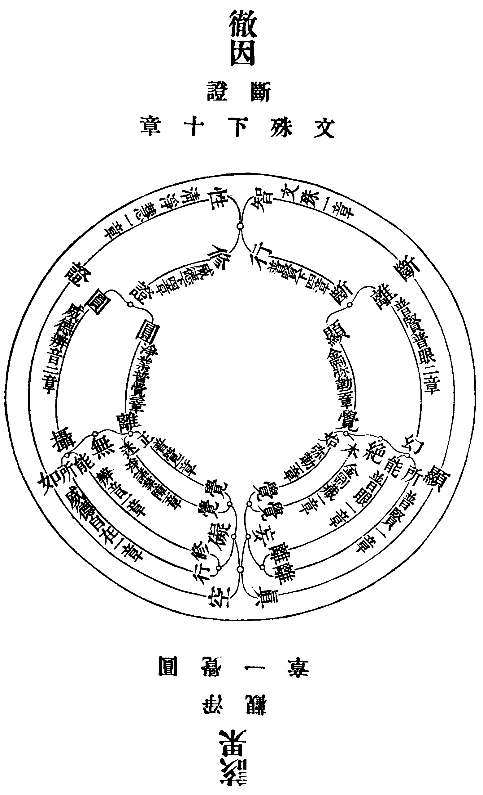
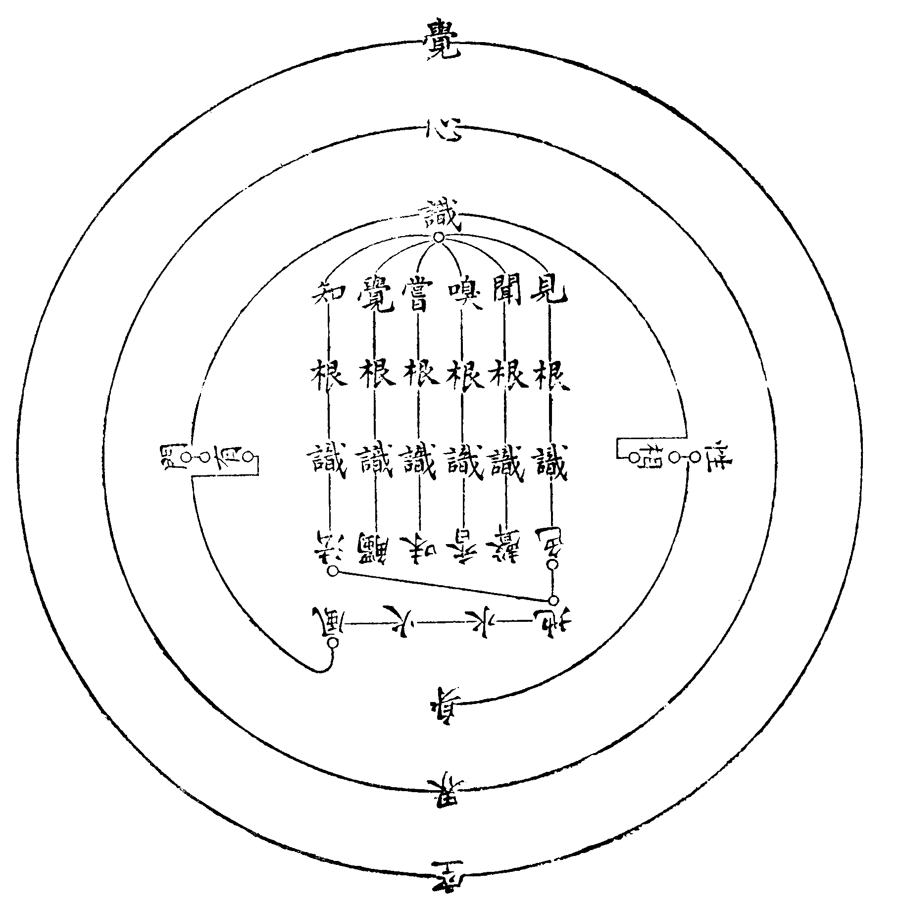

卍新纂大日本續藏經 第10冊
No.262 圓覺經句釋正白 (2卷)
【清 弘麗著】
第 1 卷
教理
修多羅教。如標月指。指上之月大圓覺心。是心也。即根塵。即法界。絕思惟。冥敷量。本一切皆證。而無分於諸佛眾生者也。爰因迷念皆證之各各不無。遂各各執有。未思各各不有。斯各各不無。失所無證之皆證。是曰無明。如所皆證之無證。則曰妙覺。無明妙覺分名。諸佛眾生立別。然實無所別也。無明者。無皆證之明。似有不有。妙覺者。妙無證之覺。真無非無。非無濫同似有。妙覺無明。不有原本真無。無明妙覺。即此迷。還此悟。法非相待。功無兩操。是故當經。無明伏斷。妙覺成就。性相雙顯。指空華比二月。呼醒夢人除於夢事。譬鑽火喻消氷磨明鏡垢現諸鏡光。漸次非所語也。究竟其須知乎。括要言之。於圓覺中無取覺者。離彼我人眾生壽者。斯則斷無明之元首。潔清明之慧目。涅槃自性清淨境界。超過化佛幻影。入住法身三昧。平等本際圓滿十方不二隨順者哉。云何無取。則如眼光曉了前境其光圓滿之得無憎愛。成就有無俱遣淨覺隨順之因地法行。斯則指上之月大圓覺心。得不迷悶者哉。若不爾者。離四病法。圓三觀修。了悟於名言間耳。求實證於根塵之無壞雜。徧滿法界。自各各不有。自各各不無。如百千燈光照一室融布無礙者。未之能也。是用前陳教理。以便初心。
宗趣
教殊頓漸。理別宗趣。是經名為頓教。宗趣迥異常途。一佛因果為宗圓滿覺心為趣。圓滿覺心為宗圓炤覺相為趣。圓炤覺相為宗永斷無明為趣。永斷無明為宗圓炤覺相為趣。一佛因果為宗者。婆伽婆入於神通大光明藏三昧正受。一切如來光嚴住持。是諸眾生清淨覺地。身心寂滅平等本際。乃至云於實相中實無菩薩及諸眾生。依此修行漸次增進至於佛地。圓滿覺心為趣者。文殊圓覺十一章。展演斷證。修習成就。究竟清淨。又圓滿覺心為宗者。文殊普覺十章中。所示修習成就。文殊章云如法界性究竟圓滿。普賢章云諸幻盡滅覺心不動。普眼章云始知眾生本來成佛。又云一切法性平等不壞。金剛藏章云入於如來大寂滅海。彌勒章云。一切眾生皆證圓覺。又云根無大小皆成佛果。又云便登解脫清淨法殿。證大圓覺妙莊嚴域。清淨慧章云一切障礙即究竟覺。有性無性齊成佛道。威德自在章云無上妙覺徧諸十方。出生如來與一切法同體平等。辨音章云以圓覺慧圓合一切於諸性相無離覺性。淨諸業障章云佛說是人漸次成就求善知識不墮邪見。普覺章云盡於虗空一切眾生我皆令入究竟圓覺。圓照覺相為趣者。文殊普覺十章中。所示修習覺心清淨。文殊章云皆依圓照清淨覺相。永斷無明方成佛道。又云有無俱遣。是則名為淨覺隨順。普賢章云得無所離即除諸幻。普眼章云譬如眼光曉了前境。其光圓滿得無憎愛。金剛藏章云生死涅槃同於起滅。妙覺圓照離於華翳。彌勒章云與其同事化令成佛。皆依無始清淨願力。清淨慧章云法界海會照了諸相猶如虗空。威德自在章云此三法門皆是圓覺清淨隨順。辨音章云一切如來圓覺清淨。本無修習及修習者。淨諸業障章云如湯消氷無別有氷知氷消者。普覺章云當求一切正知見人心不住相。不著聲聞緣覺境界。又云所證妙法應離四病。又云了知身心畢竟平等。與諸眾生同體無異。又云於圓覺中無取覺者。除彼我人一切諸相。及圓覺一章。非彼所聞一切境界。終不可取。又圓照覺相為宗永斷無明為趣者。文殊彌勒五章。知空華。無流轉。木既盡。火還滅。磨垢盡。鏡明現。銷金鑛。復本金。斷諸障。證圓覺。永斷無明為宗圓照覺相為趣者清淨慧普覺五章。首已斷。無斷者。妙法門。隨順覺。頓覺人。并法除。有能入。非覺入。究竟覺。無取覺。此之宗趣。蓋以法界圓同一覺。十方寧有異生。於無生中妄見生滅。升沈流轉。迷方性覺。偽號眾生。失本成佛。可深憐憫。是故諸佛以一大事因緣出現世間。開示悟入圓覺自性。令斷有生之妄見。皆證成佛於本來。是故當經。一佛因果為宗。然非修習覺心得成就者。得所無修亦無成就。無能證知諸佛世界猶如空華。一切眾生皆證圓覺。是故圓滿覺心為趣。是覺心也。如法界性徧滿一切平等不動。如鏡照諸像。如珠映五色。在在全光。一一圓映。本無能所分劑邊際。故極顯發而極清淨。眾生迷影妄立能所。斯成數量。隔礙法界失本圓照自性清淨。若其復本圓照離諸能所幻影像滅。爾時便得無方清淨無邊虗空覺所顯發。是故圓滿覺心為宗圓照覺相為趣。失所圓照根本無明。無明永斷即是圓照。是故圓照覺相為宗永斷無明為趣。不失圓照何有無明。欲斷無明還須圓照。是故永斷無明為宗圓照覺相為趣。斯二者。先後相資。以法本非二者也。誠如磨鏡焉。垢不盡明不現。明不虧垢不染。若其得磨垢。之方而未識全明之獲。猶非所語於修習大圓覺心者。是故當經有如是之宗趣。
章脈
既明宗趣。合詳章脈。得十二菩薩。請問世尊。垂教漸次。乃修習大圓覺心所不容己之指歸者。
夫求自性覺果。不識本起覺因。究竟本末隨順修習。則因果乖違。勤苦億劫終歸迷悶。是故文殊請說如來本起清淨因地法行。以及菩薩發心者。終始因心之本末究竟也。照覺相。斷無明。依因有無俱遣之隨順覺行。是名如來因地法行。是乃菩薩所因發心教化眾生者。世尊示之詳矣然。
照覺相以斷無明。斷無明以證實相。義含而語未顯。末世眾生蒙昧未解者但聞身心之如幻。未聞離幻妄之身心即證性覺之清淨。不無迷悶於即幻非所修。離幻無所修。取捨疑惑不能成法解脫。是故普賢。申問幻非所修。幻滅無修。無修不成解脫之疑。請教云何修行圓覺清淨境界。而一切眾生種種幻化皆生如來圓覺妙心。猶如空華從空而有。幻華雖滅空性不壞。得承開曉末世眾生。欲證圓覺不動心源。一於離幻。疑永決矣。
然務離幻。須善思惟得所住持。成就開悟方便。若其不善思惟轉成迷悶不能入覺。是故普眼。申問思惟方便。念身無體。念心無相。知於身心皆為幻垢。垢相永滅十方清淨一切法性平等不壞。真善思惟妙得開悟者哉。世尊示之詳矣。
若其不善思惟。以輪迴心生輪迴見而辨圓覺。彼圓覺性即同流轉無能免於輪迴。不可不為末世眾生昭揭開顯也。是故金剛藏。陳疑申問妄有真成始終三惑。伏請世尊顯貴。皆是輪迴思惟不能成就圓覺方便。令末世眾生。決信思惟離幻。先斷輪迴根本以求圓覺。
是斷輪迴根本也。是永斷無明之方成佛道者。有所斷。即有所證。迷於斷。即迷於證。更為明決。末世眾生斯決信於思惟離幻之正方便以成圓照覺相永斷無明者哉。是故彌勒。申問欲遊如來大寂滅海云何當斷輪迴根本者。蓋以決之當斷也。及輪迴種性者。蓋以當斷之所應知也。及修菩提差別者。蓋以因斷之所現證也。入塵教化方便者。蓋以成就眾生於斷輪迴。修菩提同入淨覺。見無不成佛之眾生。斯永斷於無明而究竟性覺也。輪迴故不成聖道。輪迴因愛為根本。差別性無明顯出。教眾生令捨愛。化成佛依淨願。有斯世尊詳示。末世眾生。當無不務斷乃輪迴根本無明。以成佛道者。
設未底至於如來之決定境界。一切煩惱畢竟解脫。必有所未斷之無明。然此非示斷能知。要惟語證方曉。是故清淨慧。請重宣法王圓滿覺性在諸眾生菩薩如來證得差別。冀令末世眾生。知所證得。以知所伏斷也。淨解隨順。住覺隨順。滅礙隨順。滿覺隨順。世尊差別詳示。後教末世眾生。於不起不息不加不辨之法門。信解受持者。蓋示不落證得之差別。直斷無明之圓因修習也。
苟圓行不彰。則受持不起不息不加不辨之法門行人。虞沈空寂。與諸土木同倫矣。是又一無明也。是故威德自在。申問方便之非一。成悟覺海之遊戲。世尊垂教以淨覺心取靜奢摩他。以淨覺心觀幻三摩提。以淨覺心寂滅而禪那。此三法門攝無量方便。要皆根本一淨覺心。是淨覺心也。不起不息不加不辨之所成悟者也。
不悟覺心。難語覺行。既悟覺心何乖覺行。寂照同時。不二隨順。斯成圓覺親近修習。末世眾生可無惑矣。成就修習於此圓攝法門。以無偏於寂照。是所求入於圓覺也。是故辨音。申問修習之有幾。二十五輪頓漸成就。以及末世修習。三七懺悔。依結開示。世尊示之詳哉。依此能修圓攝無礙。成就所行之圓攝無量。可不當知此妙法門。非一非三。而即一即三。乃本起圓覺自性之清淨隨順。無諸能所者也。無能無所。何修何證。可不當知修習此心之得成就者。於此無修亦無成就也哉。
然而難言之也。譬如有人不自斷命。末世眾生可輙語於證悟了覺之四心相。解脫清淨者哉。況也四相深隱。微細難知。非佛世尊莫能開曉。是故淨諸業障有染污迷悶不入淨覺之申問。其心乃至證於如來畢竟了知清淨涅槃。皆是我相。乃至圓悟涅槃。俱是我者心存少悟備殫證理。皆名人相。了證了悟皆為我人而我人相所不及者存有所了名眾生相。心照清淨覺所了者。一切業智所不自見。猶如命根。如是之證悟了覺所有心相。是乃無始妄執之我人四相。成於染污迷悶眾生不入淨覺者。末世眾生希望成道。無令求悟。但當精勤降伏煩惱未斷令斷。世尊。其底至之言哉。其決要之言哉。習菩提者。可以知要矣。在究竟清淨於能證心矣。
無能心之可證者。無所法之可取也。不達所法圓離。難語能心清淨。法因人示。求人依法。尤要要哉。是故普覺。有求人依法之申問。以及修行去病。發心之云何者。蓋自利利他。因地法行。之本末究竟也。求正知見無住相人。彼所證法應離四病之作止任滅。逢是知識舍身命見。斷憍慢心。供養承事。是云修行。觀彼怨家如己父母心無有二。即除諸病自他憎愛一切種子。盡於虗空一切眾生皆令入究竟覺無取覺之我人諸相是所發心。世尊一一詳示。真不捨無遮大慈。救世大悲。以覺心成就修習方便。因十菩薩次第興問。標指當時。示筏末世也哉。
如是修行。根無大小。皆成佛果。夫復何疑。未開曉者。道場安居。修觀方便。新學菩薩。更樂有聞。是故圓覺。申問備此。
賢善首即繼以名字奉持修習功德。護持流布。申問終焉。是乃毋容紊之庠序者。更喻明之。文殊問本起之因。如欲桃實枝頭。索千年之核。普賢決離幻之疑。如示核甲坼而芽生乃桃實之自。普眼請思惟方便。如示潤土栽埋灌溉以時乃核甲坼之助。金剛藏陳疑三惑。防求桃核於土核內外。理窮思惟棄栽種之事。彌勒問斷修之性。則示無破核出仁以俟芽生。及去蝕芽之蝤。與桃芳之候。清淨慧請證得之差別。則示紅熟之桃實裹根苗之桃核。威德自在請方便之非一。
章次圖

則示華開與華落總垂實之緣因。辨音問修習之有幾。則示飄風與濕雨總開落於桃華。淨諸業障問染污之不入。則示毋觀華貪桃實折向瓶中求老熟普覺。辨人法之正覺。則示老熟垂垂。曾不供人咬嚼者是全根全苗之桃核也。圓覺問安居之方便則示如何辨土與夫栽埋之法。於此全根全苗之桃核也。賢善首之名目等。則謂誰家不有此桃核哉。如此明示究竟教法以傳。將見遍野桃芳。枝枝垂實。普界盡誇桃源僊境矣。可不明白了然於圓覺章次哉。
夫自性覺心。語因果則該徹。語斷證則即離。全該全徹。全即離全者。自性覺心之因果斷證也。斷證因果。尤非二也。斷之究竟處。即證之發覺心。是曰該果。證之究竟處。無斷之最初心。是曰徹因。圓覺經教章次。實此因果該徹。斷證即離之因次也。管窺偶竅其明。願充如來使者。植分別半偈之德本。已詳章脈。宣白如是。猶恐科判全不符於諸疏。不邀法門之信受。得揚聖旨於末世。因搆斯圖。冀觸目者一覽即悉全經之章脈。研所標科。因果鋪十一章之綱。斷證分十章之目。智行性修。列目中之數。幻覺集行數之叢。攝離備修數之事。能所離而幻家具盡。始本顯而覺微妙成。如斯為行非斷行之究竟歟。能所示而攝法門豐。迷正彰而離深奧極。如斯為修非證修之底至歟。唯修之底至底至於斷之究竟也。故斷有幻之能所。而修有攝之能所。斷有覺之本始。而修有覺之迷正。以無迷覺者。無迷夫本覺也。成正覺者。圓滿乎所始覺也。能所該攝不圓。能所幻妄斯立。此其圓攝無礙。故乃離幻絕妄。是斷證之行修一如也。若夫斷證之智性不二。則智斷之顯真。性證之如空。有殊異乎哉。此十章所分之目。融布自在者也。為徹因之斷證。可知也。該果之淨觀。奢摩他。三摩鉢提。禪那。乃定。乃慧。定慧兼該之修習也。定則因果乎證。慧則因果乎斷。定慧兼該。則因果乎是斷是證。無斷無證。初學久習。修圓覺者。無不萃至之寂滅海也。圓覺當繼普覺而興問於修觀之首方便。以顯該果之修習。又可知也。是所鋪十一章之綱無紊如也。凡此者。無字出於胸臆。咸取本於經文。或者圓覺經教義味。固如是乎。因之信受。隨指觀月。得魚忘筌。圓覺伽藍。人人徑入。端藉斯圖。
圓覺經句釋正白科文
總科
別科
○二正宗分文殊圓覺十一章
○第一文殊章
○第二普賢章
○第三普眼章
○第四金剛藏章
○第五彌勒章
○第六清淨慧章
○第七威德自在章
○第八辨音章
○第九淨諸業障章
○第十普覺章
○第十一圓覺章
○第十二賢善首章
圓覺經句釋正白首卷
自無上法王開大陀羅尼門。即名圓覺。蓋本自性靈明遍滿一切無二無礙。如月落萬川。處處圓明具足者言之也。惟末世眾生。悞入根塵緣影。妄執身相心相。空華幻月。種種顛倒。以至輪轉生死。了無所得。抑知根者諸識之偶聚。如濕熱之蒸而成菌。塵者六緣之虗影。如芭蕉之卷而成心。蕉落心空。緣去而識亦亡。熱謝菌枯。濕盡而形亦壞。使非有真常覺明常清常照。何以蠲諸妄而登覺岸也哉。惜乎寶道在前。人可立悟。而善男信女鮮能信手得珠遊大覺海。皆由厥旨未標門路遮礙矣。爾時世尊。登寶蓮華座。為十二菩薩宣說玅義。其實悲憫群生及末世一切眾生億劫迷悶無能了此大圓覺心。乃開陳覺體及漸次脩習之劣。其教以清淨為宗。以斷無明。離幻妄。信解受持。不生驚畏。為隨順修習之本。迄于成就正覺心華發明自利利他照十方剎。則自性涅槃之驗也。善乎華嚴經云。知一切法即心自性。成就慧身不由他悟。楞嚴經云。圓明之知不因心念。揚眉動目早見周遮。合而觀之。舍性無覺。離覺無性。永斷無明。即性即覺。其斯為修多羅了義乎。是經也。傳播人間。獲大利濟。近有羅峰和尚句詮字釋而闡揚之。復有參戎江子信心而刊布之。又為一切眾生。開方便法門。功咸偉矣。余得從而翻閱焉。恨相見甚晚。雖照未晚也。昔杜祁公。初不解佛法。會某袖中出楞嚴首軸呈之。公覽訖索餘軸。不覺遽盡十卷。乃嘆曰。果奇書也。因拉某同謁張文定公。責其不早以告。文定笑曰。譬如失物既已得之。不必詰其得之之晚。然則余今日之獲覩是經。與大眾之受持卒業。亦顧頓漸何如耳。蚤與晚非所論也。是為序。
自解路開而大道晦。昔德山龍潭。遂焚所註金剛疏鈔。豈不以依離字義為佛魔佛冤耶。故知向上一路不即文字不離文字。圭峰既悟空華之旨。即全身拶入圓覺海中。興波作浪。橫說竪說。總不出者圈[袖-由+貴]。我羅峰大師。為博山嗣孫。早歲曾以儒英執侍余中亟集生。先生極相器重。其師資淵源有自來矣。大師開法於嶺南日親山。四方學人被其容接者。如釋重荷如脫桎梏。其法語行於世。若干種茲。圓覺句釋乃最後絕筆也。大師盖以悲願力。遊於如來大圓覺海。普令開示悟入。猶且打翻圭峰窠臼。闡揚洞上宗風。讀是疏者。須煞活全提莫存知解。始不辜大師一片婆心耳。曾是依離字義。可同年而語哉。是刻也。讐較則在犙贊禪師。捐貲獨任梨棗。則檀越江公。而首座宗符華公。始終負荷。不忘付囑。皆力助流通。並宜書於簡首。以垂永久云。是為序。
丁酉中秋居士王應華拜手題
No. 262
經題
經題如來廣彰有五。今舉前二。仍略陀羅尼三字。蓋以大方廣圓覺者法之宗。修多羅了義者詮之絕。標宗絕詮經義見矣。末世眾生或以獲聞經名開悟自性圓覺。或以先聞經名不昧向後敷宣得於佛所彰名曉了真實。有斯饒益。不嫌廣略。所謂大方廣者。乃圓覺自性常所獨露不遷遍至之也。非大之外別有方廣大之獨露也。以唯一也。既唯一焉。復何所遷。是為方也。既唯一焉。豈不遍逢。是為廣也。亦非方之外別有廣大方之不遷也。以恒在也。既恒在焉。即乃遍逢。是為廣也。既恒在焉。即乃獨露。是為大也。亦非廣之外別有方大廣之遍至也。以無外也。普無外焉。即乃恒在。是為方也。普無外焉。即乃獨露。是為大也。法本非一非三。而即一即三者也。如斯契會。方得圓覺自性之所為大方廣者。修多羅梵語。此翻契經。所謂契理契機之聖教也。了義者。乃極宣之謂。於理於事無不究竟顯了。全彰一實。不涉餘詮。猶純醍醐。不襍他味。經之一言。訓常訓法。乃貫乃攝。貫彼極宣之言。攝持所化之機。塵劫同遵。非可改易。是為修多羅了義經也。
一序分開二。一通序開三。一指重宣法。
如是。
當文二字。指重宣法。如者圓包之辭。是者當指之辭。蓋前已標經題顯有成述。故今直圓包當指全經教理文句綸貫宣說。
二表己述聞。
我聞。
當文二字表己述聞。稱述我聞表非己語。
一時。
當文二字分時別聞。尊者多聞荷命流通法藏。今在結集別別宣說。宜分聞時成立別述防疑生信。然一切經首置斯六言。乃佛般涅槃時教敕尊者。凡諸經首先唱斯句。是為通序。今在當經順文消釋。則為如是圓覺教理文句我所得聞此之一時。合三科文共成通序科竟。
婆伽婆。
當文一句尊號顯法。此即薄伽梵殊音。唐言無翻。乃梵語五不翻中含多義不翻之一。謂自在熾盛端嚴名稱吉祥尊貴。含斯六義。俱稱佛德。翻攝不盡。故存梵音為如來之果號。尊稱果號彰顯圓覺教理文句乃果體如來清淨法身全該報化住持如來藏中發揮宣說者。以見當經為無上教法。
二標處彰佛。開二一迴身性土。
入於神通大光明藏。
當文一句迴身性土。入於者。稱顯如來逆流盡源。該果徹因究竟底至圓覺自性之辭。神通大光明藏者。即圓覺自性。應用一切曰神通。包裹法界曰大。非晦昧之空結暗之色曰光明。深無以測富有難思曰藏。
三昧正受一切如來光嚴住持。
當文一句該果光嚴。三昧梵語。此翻正定。即神通大光明藏之無生滅動搖清淨平等。正受是於正定中不受諸受名為正受。此之四言心境清淨雙彰。三昧無生心之境。正受無生境之心。一切全該之辭。如來稱於諸佛。如法界性圓應法界無其增減者。光嚴稱於諸佛圓照覺相永斷無明成本佛道者。住持稱於諸佛圓覺海慧圓合一切無離覺性者。通文一句三昧四字如海凝波。一切八字如波澄海。波海不別。不共凝澄。非一非二。全彼得此。全此得彼。
二徹因本際。
是諸眾生清淨覺地身心寂滅平等本際。
當文一句徹因本際。是者。指實之辭。諸眾生者。以妄執妄集緣生性之稱。清淨覺地者。無能所性。身心寂滅者。離諸幻垢。平等本際者。本覺因心。此句文與三昧句語氣連貫。乃是序顯婆伽婆所得正受于一切如來之光嚴住持者。即是於諸眾生之清淨覺地徹其平等本際耳。諸如來非別有所住持。婆伽婆亦別無所正受。總以彰性土如來之果徹因心。非證聖有增而處凡有減者也。合文上科共成證果徹因科竟。
二接因迴土開二。一徧行隨順。
圓滿十方二不隨順。
當文一句遍行隨順。圓滿者。如法界性應現無方。十方者。法界全量。不二者。融通自他妙冥凡聖。隨順者。無諸縛脫即離取捨一切留礙。此如珠光映色隨方各現妙無違拒隨順一切。
二現土教授。
於不二境現諸淨土。
當文一句現土教授。於從也。不二境者。無能所境。現諸淨土者。能所情忘愛憎境寂無方清淨隨之顯發。合文上科共成接因迴土科竟。前合該果徹因科攝屬現行性土科竟。連合迴身性土管於標處彰佛科竟。蓋以三身說法居士不同。故當標處彰顯法說何身。
與大菩薩摩訶薩。十萬人俱。
當文二句彰數同因。與大云云一句。十萬人俱一句。與同也。方便教授已令得入實相住持。菩薩摩訶薩梵語存略。具云菩提薩埵。菩提此翻覺。薩埵此翻有情。義兼自他。度自性之眾生。度法界之眾生。俱云覺有情。摩訶此翻大。合下薩埵云大有情。信大法解大義趣大果修大行證大道之大心眾生也。此句機大。十萬人俱者。圓覺自性心王心所眷屬法數也。此句眾普。蓋乃序顯性土如來無邊教授現土同居。唯諸大菩薩圓因該果。無復有聲聞緣覺差別修證。
二稱名揚德。
其名曰文殊師利菩薩。普賢菩薩。普眼菩薩。金剛藏菩薩。彌勒菩薩。清淨慧菩薩。威德自在菩薩。辨音菩薩。淨諸業障菩薩。普覺菩薩。圓覺菩薩。賢善首菩薩。等。而為上首。
當文十四句稱名揚德。十二菩薩名十二句。等字一句。而為上首一句。文殊師利梵語。此翻妙吉祥。本智破無明有常樂妙德立稱。普賢經論通名徧吉。本行證實相平等清淨立稱。普眼如眼光圓照得無憎愛立稱。金剛藏證法實性包含法界堅固不壞立稱。彌勒此翻慈氏。如圓覺慧圓合一切無違拒性立稱。清淨慧無妄覺明諸礙知見發本明耀立稱。威德自在常寂常滅隨順無礙立稱。辨音離名言境圓慧圓修立稱。淨諸業障斷業智依明了知性立稱。普覺覺心平等無有不覺立稱。圓覺常覺不住徧滿總持立稱。賢善首覺用智先本成佛師立稱。夫呼名蓋以召體。十二菩薩總於圓覺自性行因該果體用性相所有斷證乃彰名號。若離圓覺無於菩薩無於體性即無呼名故在稱名屬揚嘉德。等者。未盡之辭。時在會上首菩薩不能備舉。蓋以圓覺自性本具一切智德。今首舉此以該一切。然俱各有所眷屬。而此十二菩薩為之上首。上首綱領也。合文上科共成初佛與俱科竟。
次眾入住。
與諸眷屬皆入三昧。同住如來平等法會。
當文二句次眾入住。與諸云云一句。同住云云一句。與諸眷屬者。菩薩同事攝化。隨類現身教授純熟一切頓機眾生。皆入三昧者。反流全一住清淨覺平等本際。此句眾入。同住如來平等法會者。住此覺地覺齊佛覺。乃融自他依正不二。履佛現土平等安居。此句眾住。前合初佛與俱科共成列眾顯因科竟。顯因有二。一顯行因。二顯法因。法因者。必三昧之皆入。斯成於如來之法會平等同住。此十二菩薩所以為末世眾生啟教圓覺行因者。惟三昧之皆入已成於如來之法會平等同住。乃能啟教圓覺。饒益末世眾生。前合標處尊號科攝屬別序科竟。連合通序科入總序分科竟。是為六種成就。一法二聞三時四主五處六侶。凡經序分例必兼該者。白如是。
二正宗分開二。一徹因斷證清淨開二。一在斷智行清淨開二。一智斷顯真清淨開二。一序述菩薩興問開二。一序問躡次。
於是。
此序顯文殊菩薩從同住法會平等本際。一時主伴果則徹乃因心因則該於果地。無二種性可得當名菩薩眾生。唯一佛覺究竟遍滿。有所興問希佛垂教開悟末世菩薩眾生。
文殊師利菩薩在大眾中即從座起。頂禮佛足右遶三匝。長跪叉手而白佛言。
當文三句序問威儀。文殊云云一句。頂禮云云一句。長跪云云一句。菩薩名義準前釋。在大眾中者。自他一境中。即從座起者。平等法會各住法位自冥他寂。今有興問為利眾生彰他境界。故從己座先現起儀。此句起問。頂禮佛足者。自他感應因果道交。徹因之頂。至果之足。故必己頂禮承佛足。方即事理存不二自他成於感應。右遶者。如日流性南盈西[日/亥]。北晦東明。三匝者。環周三世。去現未凝。是乃趨歸果位順行而至之義。此句禮敬。長跪者。身則半豎膝乃雙屈。此彰己體因行未徹。卑劣果德豎極之容。叉手者。指不開舒手不成用。此彰己體方便未具狹隘果用橫該之相。而白佛言者。直心達意無於飾言綺語。求佛開示本起遠離清淨。得果徹因了因方便。此句陳辭。
當文二句請教徹因。大悲世尊一句。願為云云一句。大悲者。稱佛無始度生無緣深慈。世尊者。德嚴十號法界宗仰。此句讚佛。願者。言己意欲。為者。邀佛方便。此會者。現土同居。諸來法眾者。皆入三昧住法會眾。說於如來者。徹因之果。本起清淨者。所本起之清淨。因地法行者。該果之因。此句正請示教徹因。蓋求證果唯務徹因。不知因地法行所本起之清淨。則無從徹因原無以圓成果證。故於法會法眾求佛示教因行本起。令知清淨不迷果證。是云徹因。
二請教了因。
及說菩薩於大乘中發清淨心遠離諸病。
當文一句請教了因。欲證徹因須先了因。故云及說。大乘中者。一佛乘中。發清淨心者。顯發本成佛覺無生滅心。願令一切眾生入究竟覺。遠離諸病者。開悟圓覺無取覺者。一切我人諸相。此則得果地覺心無生滅性於因地發心。是云了因。合文上科共成請教因行科竟。
二結益末世。
能使未來世眾生求大乘者不墮邪見。
當文一句結益。能使末世者。請所開示菩薩了因如來徹因昭明修習方便有益末世功能。不墮邪見者。了達因果不求果外之因因外之果。無於計取分別諸顛倒見。前合請教因行科共成述請教益科竟。連合序問威儀科攝屬序述儀音科竟。
二序結終始。
作是語已。五體投地。如是三請終而復始。
當文三句序結終始。作是語已一句。結述白佛之辭。五體投地一句。殞身求誨。五體者。頭面手足五支身分。投地者。全布於地。此葢彰願隱沒在己卑劣狹隘之身。顯現同佛尊特圓滿之身。如是云云一句。如是者。包指長跪叉手白言投地再請之儀。三請者。列序長跪叉手白言投地申請之極。所以三請者。願隱沒之卑劣狹隘有其體相用之三。希顯現之尊特圓滿亦有其體相用之三。故請則極於三。終而復始者。詳出長跪叉手白言投地具足以請之式。此句例結。前合序述儀音科共成序問周三科竟。連合序問躡次科入總序述菩薩興問科竟。
二序述世尊垂答開二。一長行列示開二。初序讚許開二。一讚請教益開二。一讚教因行。
爾時世尊告文殊師利菩薩言善哉善哉。善男子。汝等乃能為諸菩薩諮詢如來因地法行。
當文三句讚教因行。爾時云云一句。善男子一句。汝等云云一句。爾時者。彼時也。菩薩三請當終之時。善哉善哉者。重言詠讚示乃諦審深許之意。此句述讚。善男子者。已表成人。具足身相有大德用之稱。此句呼召與語。汝等乃能者。同居法眾行無優劣智無高下。一人請教眾人同心。故以等能齊之。諮詢如來云云者。本起遠離之清淨總屬如來之因行乃諸菩薩之所由以徹因該果者。此句讚所請教。
二讚益末世。
及為末世一切眾生求大乘者得正住持。不墮邪見。
當文二句讚益末世。及為云云一句。不墮邪見一句及兼至也。葢知於如來因行清淨即知大乘之所由求無二理致。故云及。此與請語能使口氣相為照應。亦屬連貫上文為義。得正住持者。入圓覺海徧滿總持。此句證真。不墮邪見者。究竟清淨無妄能所計取知見。此句絕妄。雖證真之外無絕妄絕妄之外無證真。然證真乃絕妄之本。故世尊推本不墮邪見於得正住持。雙複善其所請。合文上科共成讚請教益科竟。
汝今諦聽。當為汝說。
當文二句囑令諦聽。汝今諦聽句。如於諦理而聽乃能因指看月。當為汝說句。當應也可也。如諦而聽則非唯益多聞斯當可於開示。
二受教默然。
時文殊師利菩薩奉教歡喜。及諸大眾默然而聽。
當文二句受教默然。時文云云一句。及諸云云一句。時者世尊許答囑聽之時。奉教歡喜者。喜得聞所教益於諸菩薩眾生。此句自受教。默然而聽者。靜慧湛持圓聞不住。有斯默然乃能如諦而聽。此句偕他受教。合文上科其成許答囑受科竟。前合讚請教益科攝屬初序讚許科竟。
次述正答開二。一示教因行開二。一如來因行開二。一本起清淨開二。一示所本起開二。一標本唯覺。
善男子。無上法王。有大陀羅尼門名為圓覺。
當文三句標本唯覺。善男子一句。無上法王一句。有大云云一句。無上法王者。稱本法性如來。此句示圓覺教主。有大陀羅尼門者。稱本性覺該通內外。大別異旁小。陀羅尼梵語。此翻總持。門通出入不遺內外。具總持相用。然必非旁門小竇。斯無不出入。一切該通。故先標大總持。以彰其用。後標門以顯其相。名為圓覺者。當指相用呼名以召真體。此句示圓覺法相。
二標起唯覺。
流出一切清淨真如菩提涅槃及波羅蜜。教授菩薩。
當文二句標起唯覺。流出云云一句。教授菩薩一句。一切清淨者。無能斷所斷。能證所證。染污因果。真如云云者。稱佛三德果。證真如法身果。菩提般若果。涅槃梵語。此翻圓寂解脫果。及波羅蜜者。波羅蜜梵語。此翻彼岸到。彼岸佛土也。到證也。證佛土。嚴佛果。滿足成就。中含無量清淨法門故云及。此句彰諸行起性悉本圓覺。教授菩薩者。如來顯果現土總以教授菩薩悟本清淨自性覺行得乃該果之因。此句彰圓覺被機。唯菩薩性。合文上科共成示所本起科竟。
當文三句示能斷照。一切云云一句。皆依云云一句。方成佛道一句。一切如來者。從於果位追論起因。本起因地者。此本起與上本起異。上乃言起因所本。此乃言最初發覺得清淨因心菩薩地時之始起初因。此句從果顯因。皆依者。諸佛道同無或殊異。圓照者。常覺不住。清淨覺相者。諸法實相無能所性。永斷無明者。寂滅無二究竟清淨。此句示所徹因。方成佛道者。修證成就得無修證圓滿覺心。此句示所成果。文中圓照二字。標指斷妄關要。非有功用行乃根性現量圓光。不失現量境即得清淨覺境無諸妄覺明所。是故無明永斷。苟或照不圓現即乃因明立所同異熾然成立無明。無明者。無圓照之明。若其不依圓照而能斷彼無明無有是處。
二示所斷妄開二。一徵釋開二。初徵。
云何無明。
當文一句初徵。云何者。言指何者謂之無明。雖乃徵名實乃責相。故下釋相結名。
善男子。一切眾生從無始來種種顛倒。
當文二句出諸妄性。善男子一句。一切云云一句。從者。自也。無始者。根本無明。體性虗妄無有本始。指彼無明業相來者。由此無本始之虗妄迷生虗妄。歷塵劫以至今日。指彼無明之轉現相。種種顛倒者。見相惑亂織妄昏濁自他依正。迷己逐物認物為己。指彼無明智相續執取名字造業。業苦之六麤妄性。
二喻顯迷真。
猶如迷人四方易處。
當文一句喻顯迷真。猶如者。譬喻之辭。迷人者。迷一法界之人。四方易處者。惑東為西。惑南為北。常住自本己方。而生客作他鄉之想。此喻覺明之明了知性於本自心相惑妄計取立所生能見有異同起愛憎心性。成立種子現行無明。猶如迷人迷己本方之東南西北。乃生易處之東南西北。合文上科共成妄性迷真科竟。
妄認四大為自身相。六塵緣影為自心相。
當文二句出諸妄相。妄認云云一句。六塵云云一句。妄認者。所立照亡之妄能性。此即業轉現後之智識。四大者。地水火風。為自身相者。迷有和合立己相分成於色法。不悟四大性本各離無實和合。此句迷妄有身。六塵者。色聲香味觸法。緣影者。由塵所發之知。乃即攀緣五門落謝塵影之緣慮心識。為自心相者。迷乃光耀立己見分成於心法。不悟緣影黏妄發光非本明耀。此句迷妄有心。是為眾生無始生死色心二法所由立相。總皆出彼妄認非實有性。
二喻顯本妄。
譬彼病目見空中華。及第二月。
當文三句喻顯本妄。譬彼病目一句。見空中華一句。及第二月一句。譬者比方也。彼者指病目人。病目者有眚之目。此句喻無明業識。見者即彼妄認智識空中華者。本無華相。相出病目。此句喻執身相第二月者。于彼真月。見有重輪。此句喻執心相。言及者。有見空華之病目。即有見於二月。勢必雙顯。非見空華之病目。能無見於二月。故云及。此喻有妄認之身相。即有心相與根本無明為三苦輪轉之生死。所以華相喻身二月喻心者以華相從虗空幻影。一期病目對彼常住虗空無有滅空華見之時。除目復清明與暗室黑夜同羣盲等皆有見於華相。足當身相。非一期壽盡及離分段生死無有捨執之地。二月從真月幻影。一期病目於彼真月隱現不定成對出生二月之相。時或緣集則見重輪。時或緣離即乃冥觀。足當心相對境生起因緣無定之性。合文上科共成妄相本妄科竟。前合妄性迷真科攝屬釋妄性相科竟。
善男子。空實無華病者妄執。
當文二句迷實相因。善男子一句。空實云云一句。空實無華者。覺相如空徧滿清淨。病者病目人也。妄執者不悟虗空無有出生華相。以己病目於清淨虗空見有亂起亂滅之空華相執以為實不悟清淨實相。此句是迷真因。此中不及月喻者。眾生所認之心相。執為在於身內。華相當身心乃從攝。故不兼出。
二迷真性果。
由妄執故非唯惑此虗空自性。亦復迷彼實華生處。
當文二句迷真性果。由妄云云一句。亦復云云一句。由妄執故者。由於執虗妄相乃迷實相。非唯者。唯獨也猶云不獨。虗空自性者。清淨實相之性。此句迷相迷性。亦復者兼及也。實華生處者。究竟正覺心華發明之處。此句迷心。葢以實相由淨性顯清淨相性本覺心發明。若迷於相則迷於性此不待言。即乃失本成佛覺遍滿清淨寂滅隨順平等自心。故有非唯亦復之辭。科云迷真性果者。以覺成就處乃清淨性究竟處故名曰果。合文上科共成迷真因果科竟。
二立妄因果。
由此妄有輪轉生死。
當文一句立妄因果。由此者。以迷清淨相性因果乃受虗妄相性因果。妄有者。空華二月也。輪轉生死者。本末無明種子起現行現行成種子新熏舊熟如輪環轉。生生死死死死生生無有斷時。前合迷真因果科共成釋妄因果科竟。連合釋妄性相科攝屬次釋科竟。
二結名。
故名無明。
當文一句結名。故名者。原上文句結示之辭。以斯故立斯名也。無明者。一切眾生總以無始迷無失明照性。有上無明性相因果。乃二生佛。是故無有眾生但有無明。無明斷盡即成佛道。前合徵釋科共成示所斷妄科竟。連合示能斷照科文攝屬初標斷妄科竟。
善男子。此無明者非實有體。
當文二句標顯。善男子一句。此無云云一句。此無明者。指上當名無明之性相因果。非實有體者。體該性相因果於四無異騐體真實。今四全虗體何有實。
二喻明開二。一喻生無體。
如夢中人夢時非無。及至於醒了無所得。
當文二句喻生無體。如夢云云一句。及至云云一句。如者合樣之辭。夢中人者。夢境所現之人。或自身變現異本有身。或自身不變接多他身。俱夢中人。喻彼無明住地。夢時非無者。夢人在夢作用宛然。喻彼無明現行。此句喻無明生相。及至於醒者。形開寤爽之際。喻時復圓明照。了無所得者。夢人夢事渾全無狀非無竟無。喻彼住行本空。此句喻無明無體。
二喻滅無體。
如眾空華滅於虗空。不可說言有定滅處。
當文二句喻滅無體。如眾云云一句。不可云云一句。如眾空華者。自他依正業行因果種種非一。滅於虗空者。復本虗空自性遍滿清淨。此句喻無明滅。不可說言有定滅處者。空本無華何有滅華之處。如斯幻滅何有滅相。此句喻滅無體。合文上科共成喻明科竟。前合標顯科攝屬非實有體科竟。
二本無生處。
何以故。無生處故。
當文二句本無生處。何以故一句。無生處故一句。初句徵問無明如夢人空華非實有體之故。次句釋明眾生自性唯淨圓覺如法界性徧滿平等為實華生處。更何有處生彼無明故乃無於實體以本無於生處。前合非實有體科共成無明本虗科竟。葢於無明達體非實則無諸妄身心。達生無處則無諸妄境界。身境妄相俱無無明當體全虗成於開顯。
二生死唯名。
一切眾生於無生中妄見生滅。是故說名輪轉生死。
當文二句生死唯名。一切云云一句。是故云云一句。一切眾生者。四生九有。於無生中者。夢人空華。妄見生滅者。夢人空華本無生滅眾生見生見滅非實有見。此句指眾生生死。是故者。妄見非實之故。說名輪轉生死者。善惡因苦樂果染淨依正一切輪迴總唯意識境。俱乃名言境。但有言說都無實義。此句示生死唯名。此唯名彰妄因果清淨。前本虗彰妄性相清淨。性相因果清淨。即乃一切清淨。前合無明本虗科共成次彰清淨科竟。連合初標斷妄科攝屬所清淨科竟。接合示所本起科管於本起清淨科竟。
二因地法行開一二。標所修法。
善男子。如來因地修圓覺者。
當文二句標所修法。善男子一句。如來云云一句。如來因地者。指己成佛前居因地中。修圓覺者。修於自性圓覺令得平等清淨徧滿成就。更無他法以當修習。
二示能修行開二。一達妄照覺開二。一達妄本空開二。一妄能所淨開二。一所執妄淨。
知是空華。即無輪轉。
當文二句所執妄淨。知是空華一句。即無輪轉一句。初句達無生滅性。二句遠離妄境。
二能執妄淨。
亦無身心受彼生死。
當文一句能執妄淨。是遠離和合性常自照蘊空。當念無能執永離於業縛。合文上科共成妄能所淨科竟。
二妄本性空。
非作故無。本性無故。
當文二句妄本性空。非作故無一句。本性無故一句。初句非加功用行無諸妄能所。次句無明無自性無法立能所。原本悉清淨究竟無生滅。前合妄能所淨科共成達妄本空科竟。
彼知覺者猶如虗空。知虗空者即空華相。
當文二句照覺實相。彼知云云一句。知虗云云一句。彼知者。彼修圓覺之人自心了達之知。覺者己本性覺。猶如虗空者。性覺清淨如虗空相。此句圓照覺相。如虗空者。了達實相。即空華相者。泯諸妄相。此句證入實相。
二照覺淨性。
亦不可說無知覺性。
當文一句照覺淨性。亦不可說云云者。修圓覺人自知於不可說無。乃增進開悟顯發清淨究竟遍滿平等覺性。合文上科共成照覺如空科竟。前合達妄本空科攝屬達妄照覺科竟。
有無俱遣。是則名為淨覺隨順。
當文二句遣惑順覺。有無俱遣一句。是則云云一句。有無俱遣者。通達實相清淨不執空華幻影以遣於有。究竟淨性遍滿得乃正覺住持以遣於無。此句性相圓明。是則者。此則也。指上俱遣之辭。猶云是此則此。非此則不此矣。令知必俱遣乃成順覺。名為淨覺隨順者。了悟性相寂滅現前無有不覺名為淨覺。一覺遍滿圓合一切無異同性名為順覺。此句修習成就。
二釋遣成順。
何以故。虗空性故。常不動故。如來藏中無起滅故。無知見故。如法界性究竟圓滿遍十方故。
當文六句釋遣成順。何以故一句。虗空性故一句。常不動故一句。如來云云一句。無知見故一句。如法云云一句。初句徵問必俱遣斯成順說之故。二句虗空性故者。釋覺乃實相性無不清淨故有之當遣。三句常不動故者。釋覺平等住持常自現前故無之當遣。合此二句釋覺離於有無所以當有無之俱遣。如來藏中者。清淨覺也。無起滅者。無妄能所。此句一相清淨。無知見者。無妄覺明。此句一性清淨。合此二句釋覺清淨所以離於有無。故當有無之俱遣乃得名為淨覺。如法界性者顯發虗空包裹無外。究竟圓滿者。圓滿慧性圓合一切。遍十方故者。唯一覺境不一不異。此句釋覺常住所以離於有無。故當有無之俱遣乃得名為隨順。合文上科共成順覺遍滿科竟。
二結名成行。
是則名為因地法行。
當文一句結名成行。是則者。指淨覺隨順之辭。必得名為淨覺隨順斯得名為因地法行。葢得名為淨覺隨順以有無之俱遣。是乃圓照覺相是乃永斷無明故得名為因地法行。而有其成於佛道者。此兩是則與前皆依相呼照應。標指如來因地法行唯一淨覺之隨順圓攝究竟諸妙方便。前合順覺徧滿科共成順覺成行科竟。連合達妄照覺科攝屬示能修行科竟。接合標所修法科管於因地法行科竟。綸合本起清淨科該在如來因行科竟。
二菩薩發心。
菩薩因此於大乘中發清淨心。
當文一句菩薩發心。因此者。因淨覺隨順之因地法行。大乘發心釋準前。前合如來因行科共成示教因行科竟。
二示益末世。
末世眾生依此修行不墮邪見。
當文一句示益末世。依此者。依猶因也。於如來之淨覺法行準則以修行也。不墮邪見釋準前。此與菩薩發心一同指歸如來因行者。以興問如來因行本為示教菩薩以益末世眾生令善修學大乘徹因該果。故此標指。前合示教因行科入總長行列示科竟。
二重頌總挈開二。一序欲重宣。
爾時世尊欲重宣此義而說偈言。
當文一句序欲重宣。前已詳示今更約語彰其要義為益將來俾易開曉。
二述說偈言開二。一挈旨示教因開二。一挈旨如來因行開二。一挈旨本起清淨開二。一挈旨示所本起。
二挈旨示所清淨。
二挈旨因地法行開二。一挈旨示所修法。
覺者如虗空 平等不動轉
二挈旨示能修行。
二挈旨菩薩發心。
菩薩於此中 能發菩提心
二挈旨示益末世。
末世諸眾生 修此免邪見
重頌文竟。前合長行攝屬序述世尊垂答科竟。連合序述菩薩興問科入總智斷顯真清淨科竟。蓋以佛道之成在無明之永斷。無明之永斷在覺相之圓照。無不圓之照斯無不清淨之覺相而永斷於無明成乃佛道矣。是云智斷顯真清淨。言以智斷妄則顯於真之清淨也。又本文云如來因地修圓覺者知是空華即無流轉。夫但知即無此顯於真之清淨也。無所染污屬本智斷。然有智斷即有行斷。智斷未彰行斷何立。故此章科智斷顯真。存合下四章科行斷絕妄以總成在斷智行清淨之因地法行也。
大方廣圓覺修多羅了義經句釋正白卷上之上
大方廣圓覺修多羅了義經句釋正白卷上之中
二行斷絕妄清淨開二。一離幻絕妄開二。一決疑離幻開二。一序述菩薩興問開四。一序問躡次。
於是。
此序顯普賢菩薩從如來因行成於順覺。悲念眾生迷無執有不能俱遣有無不得順覺。無以修習如來因行。有所興問希佛教益。令不迷無乃不執有知所離幻成於順覺修習。
普賢菩薩在大眾中即從座起。頂禮佛足右遶三匝。長跪叉手而白佛言。
句釋準前。
大悲世尊。願為此會諸菩薩眾及為末世一切眾生修大乘者。聞此圓覺清淨境界云何修行。
當文三句正問離幻。大悲世尊一句。願為云云一句。聞此云云一句。例釋準前。圓覺清淨境界者。有無圓離。徧滿住持十方隨順如虗空性常不動搖無於起滅知見。云何修行者。請決圓離有無得於隨順修習。此句直問所修。
當文三句設難同幻。世尊一句。若彼云云一句。云何云云一句。若彼眾生者。若擬辭。知如幻者。者字即人字。言知如幻之人。如幻指所緣境。身心亦幻者。言知幻人之身心亦塵緣影像無有實性。此句指身心同幻。云何者。疑問之辭。以幻者。以幻身心為能修性。還修於幻者。遠離如幻之妄境。此句彰疑幻不能離幻。伏請世尊開示離幻妄之身心。以成離幻。
二設難同滅。
當文二句設難同滅。若諸云云一句。云何云云一句。若諸幻性者。該指自他依正。一切盡滅者。幻性虗妄非常住法。則無有心者。如幻之心應同幻滅。誰為修行者。心為能修。既無於心更誰為於修行。此句彰滅無修。云何復說修行如幻者。說修行如幻則有於修行此之修行更屬誰為。此句彰修非滅。伏請世尊開示諸幻盡滅覺心不動為所修法。合文上科共成初難幻滅科竟。
次迷修難。
若諸眾生本不修行於生死中常居幻化。曾不了知如幻境界令妄想心云何解脫。
當文二句次迷修難。若諸云云一句。曾不云云一句。本不修行者。本由也。由於迷妄不務遠離諸幻境界。常居幻化者。輪轉因果虗妄生滅。此句生死所由。曾不了知者。無所從有其了知。此以了知原始於心。既幻滅無心即無所原始。得曾有其了知。如幻境界者。能所緣境。令妄想心者。能所緣心。云何解脫者。了知幻妄則除攀緣無所分別息心達本得乃解脫。既無了境幻妄之知。則逐境生心益滋妄想何能息滅有其解脫出所輪迴。此句解脫無因。伏請世尊開示離諸身心之得無所離即除諸幻。前合初難幻滅科共成反彰離幻科竟。在初疑難同幻非所修。同滅無所修。次疑難同輪由迷幻以極彰顯諸幻妄法定非在所修習者。伏請世尊開示離幻為順覺方便。順覺乃因地法行。是所修法。連合正問離幻科攝屬請教所修科竟。
當文二句請益得離。願為云云一句。令諸云云一句。作何方便者。教之以修何法成就離幻方便。漸次修習者。離於所離離乃能離緣塵幻垢增進清淨。此句請有開示。永離諸幻者。不迷所修隨順淨覺得乃無離。此句結益得離。前合請教所修科共成述請教益科竟。連合序問威儀科攝屬序述儀音科竟。
二序結終始。
作是語已。五體投地。如是三請終而復始。
句釋例前。前合序述儀音科共成序問周三科竟。連合序問躡次科入總序述菩薩興問科竟。
二序述世尊垂答開二。一長行例示開二。初序讚許開二。一讚請教益開二。一讚請所修。
爾時世尊告普賢菩薩言善哉善哉。善男子。汝等乃能為諸菩薩及末世眾生修習菩薩如幻三昧方便漸次。
當文三句讚請所修。通列二句。汝等云云一句。如幻三昧者。知一切法如幻體性則不迷輪得正住持。
二讚益得離。
令諸眾生得離諸幻。
二許答囑受開二。一囑令諦聽。
汝今諦聽當為汝說。
句釋例前。
二受教默然。
時普賢菩薩奉教歡喜。及諸大眾默然而聽。
句釋例前。合文上科共成許答囑受科竟。前合讚請教益科共成初序讚許科竟。
次述正答開二。一示教所修開二。一幻滅覺顯開二。一示幻生滅開二。一幻生因覺開二。初標。
善男子。一切眾生種種幻化皆生如來圓覺妙心。
當文二句初標。善男子一句。一切云云一句。皆生如來云云者。示幻生所因。顯幻滅所還。令不疑幻滅無心迷於修習。
次喻。
猶如空華從空而有。
當文一句次喻。空華雖從空有。然無裂空之空華。喻明幻化雖依覺生。無有動覺之幻化。合文上科共成幻生因覺科竟。
二幻滅還覺開二。一即喻顯空。
幻華雖滅空性不壞。
二合喻彰覺。
眾生幻心還依幻滅。諸幻盡滅覺心不動。
當文二句。合喻彰覺。眾生云云一句。諸幻云云一句。還依幻滅者。境生心生。境滅心滅。一切心生由境幻生。一切心滅由境幻滅。非別有依何別有滅。此句合明上喻空華滅句。覺心不動者。諸幻生非動覺生。諸幻滅無動覺滅。此句合明上喻空性不壞句。以決幻性盡滅無心修行之疑。合文上科共成幻滅還覺科竟。前合幻生因覺科攝屬示幻生滅科竟。
依幻說覺亦名為幻。
當文一句隱成依幻。依幻說覺者。本幻影之身心生滅有無說於覺性有無。亦名為幻者。所說之覺總屬妄覺生滅知見。故乃隨相生滅乍有乍無。不得名覺總名為幻。
二釋明依幻。
若說有覺猶未離幻。說無覺者亦復如是。
當文二句釋明依幻。若說云云一句。說無云云一句。若說有覺者。本幻現之身心說有覺知心性。猶未離幻者。身心幻垢總出無明妄計。今執身心說有覺性。豈不還依無明。此句有幻。說無覺者。本幻滅之身心說無覺知心性。亦復如是者。如說有覺之未離幻。葢身心既屬無明。身心滅但是無明滅。何關於覺。今乃於身心滅說無於覺。豈不迷無明以當覺性。此則即是無明故未離幻。此句無幻。合文上科共成示覺由隱科竟。
二示覺緣顯。
是故幻滅名為不動。
當文一句示覺緣顯。是故者。依幻說覺未得離幻之故。幻滅者。於幻無依身心寂滅忘諸能所離於言說。名為不動者。能所清淨言語道斷即是實相住持。前合示覺由隱科共成示覺隱顯科竟。連合示幻生滅科攝屬幻滅覺顯科竟。答所請問之云何修行於圓覺境界者。
當文二句應離妄境。善男子一句。一切云云一句。應當遠離者。應宜也。決示修習在於離幻。一切幻化云云者。該指自他依正所有色法。
由堅執持遠離心故。
當文一句推本全一。由者本也。堅者。八識堅住不變體性。執持者。八識含藏種子受熏名目。遠離心者。七識不緣外境無始時來唯執八識體性為我。故者。與由字義相呼應。推明得遠離幻由於八七全一冥用不行。以故六識無依不起分別。隨順圓照遠離虗妄。
心如幻者亦復遠離。
當文一句離六分別。心如幻者。六用意識分別妄心。亦復遠離者。六識逐境緣生。既知境性虗妄斷攀緣想。末那歸於種位即除對境分別六識用冥。故乃遠離。
二離七執我。
遠離為幻亦復遠離。
當文一句離七執我。遠離為幻者。七為六依。六離緣染。依七執內自我緣念真如成性。故七識即屬遠離心。然七識所內執我屬八見分無自體性故名為幻。亦復遠離者。七緣六八為相。六離緣染無於幻相。七離外種半分末那內種半分末那所有執心亦漸虗明。故乃遠離。合文上科共成離能幻用科竟。
二離所幻用開二。一離八妄性。
離遠離幻亦復遠離。
當文一句離八妄性。離遠離幻者。言離於遠離之幻。以八識妄性屬根本無明。非同七識依他。又性唯無覆心具徧行於善惡染淨因緣平等無違拒。非同七識不緣外境。一類執八識見分為內自我。又八識同五現量。不同七識非量。種種各別。故與遠離七識異住為離。幻者。八識妄性迷心相有。心相清淨迷有為妄無體依住安立相分故云幻。亦復遠離者。所妄生於八識。能妄由七強執。無七強執八即無於轉現相智相續相無所資熏滋妄種性。故乃遠離。
二離性清淨。
得無所離即除諸幻。
當文一句離性清淨。得無所離者。斷本無明住自覺性照境不二。即除諸幻者。無二能所見相冥寂顯發清淨得無離性。合文上科共成離所幻用科竟。前合離能幻用科攝屬詳次離用科竟。以識乃有為性屬生滅法故云用。連合推本全一科管於本離妄心科竟。接合應離妄境科該在標指應離科竟。
二喻顯得離開二。初喻。
譬如鑽火。兩木相因火出木盡灰飛烟滅。
當文二句初喻。譬如鑽火一句。兩木云云一句。初句立喻。次詳喻。鑽火喻應離幻境。兩木相因喻八七冥一。火出喻離六分別。木盡喻離七我執。灰飛喻離八妄性。烟滅喻離性清淨。此中喻意漸次法因火從木。出猶六依七根。故火喻六。木喻七。灰雖木燼成本土質。猶七冥性歸種八識。故灰喻八。烟本火出。猶諸幻以分別見生。故烟喻諸幻。然常情法必烟先滅後乃灰飛。今言灰飛烟滅者。以灰存即土留礙。有土留礙則木依根。有木依根即火存熾。有火存熾烟何得滅。故必灰飛始得烟滅。方足喻當離性清淨。以離性清淨者。離於離性則乃清淨。離性是灰飛義。清淨是烟滅義。
後合。
以幻修幻亦復如是。諸幻雖盡不入斷滅。
當文二句後合。以幻云云一句。諸幻云云一句。以幻合喻兩木相因。修幻及亦復如是合喻火出木盡灰飛烟滅。此句合明。諸幻雖盡云云。此句結顯。以離幻除幻得乃淨覺常住故不入於斷滅。葢堅執持遠離心是以幻。離諸妄境妄心是修幻。合文上科共成喻顯得離科竟。前合標指應離科攝屬離幻除幻科竟。答所請問云何以幻之諸疑難者連合幻滅覺顯科管於示教所修科竟。
善男子。知幻即離不作方便。離幻即覺亦無漸次。一切菩薩及末世眾生依此修行如是乃能永離諸幻。
當文四句示益得離。善男子一句。知幻云云一句。離幻云云一句。一切云云一句。知幻即離者。幻體無明知性覺照不相對立。不作方便者。決定知即決定離。若有未離還由未知。葢以幻從無明立知破無明性幻無依立。故乃即離無功用行不別有其方便。此句決之務知於幻以離於幻。不須外覓方便答請作何方便之問。離幻即覺者。幻無體性迷覺建立。不迷於覺斯離於幻。既離於幻原住自覺。何不即覺。亦無漸次者。全幻全覺無二住地。彼離此即不異境界。故乃即離即即無於漸次。若未即覺還未離幻。此句決之務離於幻以即於覺。不須外覓漸次修習答請漸次修習之問。依此者。依於離知即覺之為修行。如是者。得能離知即覺以為修行。乃能云云者。則能離幻清淨得入正覺平等住持。此句決修離幻。前合示教所修科入總長行列示科竟。
二重頌總挈開二。一序欲重宣。
爾時世尊欲重宣此義而說偈言。
例釋準前。
二述說偈言開二。一挈旨所修開二。一挈旨幻滅覺顯開二。一挈旨幻生因覺。
普賢汝當知 一切諸眾生 無始幻無明
皆從諸如來 圓覺心建立 猶如虗空華
依空而有相
二挈旨幻滅還覺。
二挈旨離幻除幻開二。一挈旨標指應離。
二挈旨喻顯得離。
如木中生火 木盡火還滅
二挈旨得離。
覺即無漸次 方便亦如是
方便亦如是者。離即無方便也。重頌文竟。前合長行共成序述世尊垂答科竟。連合序述菩薩興問科攝屬決疑離幻科竟。言決疑者。以菩薩問意在請決圓覺境界云何修行於幻垢身心申所疑難見諸幻妄非所修所。世尊答教幻滅覺顯乃為決所修行。
於是。
此序顯普眼菩薩從順覺因行有所修行在於離幻之得無所離。悲念眾生無明癡暗無能知於離幻有其得無所離之即除諸幻。乃為興問希佛教益。令正思惟成就修行悟入圓覺。
普眼菩薩在大眾中即從座起。頂禮佛足右遶三匝。長跪叉手而白佛言。
句釋例前。
大悲世尊。願為此會諸菩薩眾及為末世一切眾生。演說菩薩修行漸次。云何思惟。云何住持。
當文五句請思惟修。大悲世尊一句。願為云云一句。演說云云一句。云何思惟一句。云何住持一句。菩薩修行者。離幻修習。漸次者。離幻始終。此句總問。云何思惟者。分別離幻。葢不得所分別了達於幻無以離幻。此句承佛開示知幻即離知字興問。云何住持者。覺徧滿相。葢不曉了覺徧滿相。何能知於諸幻盡滅成就覺顯。此句承佛開示離幻即覺覺字興問。以有離之知斯有即之覺。乃佛教菩薩之所依以修行者。眾生恐有未知故又為於別問。
二請開悟修。
眾生未悟作何方便普令開悟。
當文一句請開悟修。眾生未悟者未悟乃離幻思惟以即於覺。作何方便者。即請教示云何思惟。普令開悟者。得所即覺住持。合文上科共成請教能修科竟。
二請益方便開二。前述迷失。
世尊。若彼眾生無正方便及正思惟。聞佛如來說此三昧心生迷悶。即於圓覺不能悟入。
當文四句前述迷失。世尊一句。若彼云云一句。聞佛云云一句。即於云云一句。無正方便者。無於離幻之離。無正思惟者。失乃離幻之覺。此句述生前迷。說此三昧者。不動覺心。心生迷悶者。迷無離幻之知。悶乃事理遮障。此句述生中迷。不能悟入者。覺心不成開顯。此句述生後迷。所以如此前迷者。欲得佛示正方便思惟簡別妄知邪思故以知性思心屬虗妄體相非淨覺實性。用之修習。在如鑽火因木期於火出木盡。若其不知本取木盡。收功永離諸幻。則是以生滅因求不生滅果。無有是處。普眼菩薩深恐眾生迷悶於此。失能修方便。故為請益。
次請悲誨。
願興慈悲。為我等輩及末世眾生假說方便。
當文二句次請悲誨。願興慈悲一句。為我云云一句。願興慈悲者。如來大悲原以眾生迷覺。故今於生迷覺請佛興慈運悲。此句求哀生迷。假說方便者。知性思心究如木盡。今但因之離幻如但因木生火非執木為究竟法。故云假說。此句請有教益合文上科共成請益方便科竟。前合請教能修科攝屬述請教益科竟。連合序問威儀科管於序述儀音科竟。
二序結終始。
作是語已。五體投地。如是三請終而復始。
句釋例前。前合序述儀音科共成序問周三科竟。連合序問躡次科入總序述菩薩興問科竟。
二序述世尊垂答開二。一長行列示開二。初序讚許開二。一讚請教益開二。一讚教能修。
爾時世尊告普眼菩薩言善哉善哉。善男子。汝等乃能為諸菩薩及末世眾生問於如來修行漸次。思惟住持。
當文四句讚教能修。通例二句。汝等云云一句思惟住持一句。餘釋準前。
二讚益方便。
乃至假說種種方便。
當文一句讚益方便。乃至者。相因而至之辭。以請教意本在得正思惟以得正住持。恐眾生不能開悟於正思惟失正住持故兼請說方便。是以如此加讚。種種方便者。說身心幻垢。及說離諸幻垢。開示非一。合文上科共成讚請教益科竟。
汝今諦聽。當為汝說。
句釋例前。
二受教默然。
時普眼菩薩奉教歡喜。及諸大眾默然而聽。
句釋例前。合文上科共成許答囑受科竟。前合讚請教益科攝屬初序讚許科竟。
善男子。彼新學菩薩及末世眾生欲求如來淨圓覺心。
當文二句標果求覺。善男子一句。彼新云云一句。指新學菩薩者。以請教意在云何思惟乃能得正住持是為初學菩薩興問。故此標指。欲求如來淨圓覺心者。求本性覺不慕差別果證。
應當正念遠離諸幻。
當文一句離幻修行。應當正念者。中正其念不邪依倚。前章之堅執持遠離心是為正念。葢七八識心冥用全一斯能不隨境生心逐物遷轉中中流入有其正念。遠離諸幻者。幻境幻心一切遠離。此該行因終始故標修行。
二離幻漸次。
先依如來奢摩他行堅持禁戒。安處徒眾。宴坐靜室。
當文三句離幻漸次。先依云云一句。安處徒眾一句。宴坐靜室一句。先依者。修行本始。奢摩他者。梵語。此翻止。即定之初名。是寂靜義。能令三業諸惡煩惱成寂靜故。故下文釋云至靜為行。乃教先依此行次持戒以固之。然定有大小邪正。故標如來以別之。若不依定持戒則不能為圓覺方便。又即此能成定共戒故。堅持禁戒者。身口無犯。是乃先心而後身口。令三業俱寂而入定住。此句離動相之漸次。安處徒眾者。各教靜攝不相對偶無於繫屬。此句離人相之漸次。宴坐靜室者。不煩起作遠闠閙場令逸忘身。此句離我相之漸次。皆乃息緣攝身得以攝心。除於事障漸伏理障得以遠離諸幻。修佛菩提之所必先依者故云漸次。合文上科共成修行漸次科竟。
二思惟住持開二。一離幻思惟開二。一思惟無身開二。一諦審合離開二。一審執和合。
恒作是念我今此身四大和合。
當文一句審執和合。恒作是念者。諦審諦思無乍忘時。我今此身者。指自身相。四大和合者。指自身相所依立處。云大者。地水火風四各周徧。云和合者。己身若唯地大無水大者如乾麨灰無團聚理。若唯水大無地大者如濕油水無堅實性。若唯地水無火大者如陰處肉團每自爛壞。若惟地水火無風大者宜不增長無所動搖。今皆不爾。故見己身於彼四大和合為相。然此乃迷妄身所成執處。今將破執故先從審。
二審在各離。
所謂髮毛爪齒皮肉筋骨髓腦垢色皆歸於地。唾涕膿血津液涎沫痰淚精氣大小便利皆歸於水。暖氣歸火。動轉歸風。四大各離。
當文五句審在各離。四皆歸四句。四大各離一句。所謂者。審自身分又有其專名定目之所稱謂。髮毛等之皆歸於地者。以皆具質礙相不可指屬餘大。此句地大離立。唾涕等之皆歸於水者。以皆具流動相不可指屬餘大。此句水大離立。暖氣歸火者。以顯現炙熱相不可指屬餘大。此句火大離立。動轉歸風者。以明見飄搖相不可指屬餘大。此句風大離立。四大各離者。既本自歸何相和合故本各離。此句總承上四明決各離得乃現在身相無其和合者。於中水火二大云精氣暖氣者。以氣有潤濕溫暖二相。現二大形。故成分指。又精之在人身無定屬處。男女欲火熏觸百骸暖氣生潤故有精出。是精本屬氣分。人身暖氣周徧一身遇觸摩處更見熱炙。是暖亦屬氣分。故云氣。然氣本和合有尚見不相和合之大相。四大無於和合誠可明決。合文上科共成諦審合離科竟。
今者妄身當在何處。即知此身畢竟無體。
當文二句知處體虗。今者云云一句。即知云云一句。今者妄身現前身相也。當在何處者。何處安立也。此句求身無處。語意與我今此身二句意相詳審。以素執現前身相於四大和合為所立處。今既四大咸各離相無和合處則現前此身成無安立。即知者。即無安立處知之也。此身畢竟無體者。有體必有立處。既無於處則乃無體。畢竟無體者。徹底無有之辭也。此句知乃體虗。
二了相同幻。
和合為相實同幻化。
當文一句了相同幻。和合為相者。現前身相。實同幻化者。雖有實無。此以無處則無體。無體宜無相。今身無於體處有其形相。此相何相。與諸世間幻化之相以無體處有實為不異。是乃了相虗妄得無身見幻垢迷執。合文上科共成通達虗幻科竟。前合諦審合離科攝屬思惟無身科竟。
四緣假合妄有六根。六根四大中外合成妄有緣氣於中積聚。似有緣相假名為心。
當文三句審心緣相。四緣云云一句。六根云云一句。似有云云一句。四緣者。業識趣生於父母流愛四大精血緣因納想立己身分。假合者。四大現在各離所成身分和合之相實同幻化。妄有六根者。根依身立身緣既假根相無真。此句審根生緣。六根四大者。指勝義浮塵二根。中者。勝義根乃明暗動靜妄塵所發居中之見聞覺知。外者。浮塵根乃蒲萄朵新卷葉之四大相。合成者。有於四大浮塵根。與映聲映色之勝義根。中外相依乃流逸攬塵具六根相用。妄有緣氣者。根門中外所吸之塵影。鼓發之見聞覺知。於中積聚者。攬根門塵影知見成立緣慮意根於身內肉團空處及五門根中此句審識生緣。似有緣相者。有積聚之意根。乃發分別之意識。意根屬能緣相。然此緣相。本根門緣塵影氣包攬成立。幻化同相非是實有但似有耳。假名為心者。緣慮意根乃迷情所妄認為心性者。既相似有。名亦假設。無一真實。總屬妄緣。此句指本根識緣相為心緣相以見虗妄。
二決心無相。
善男子。此虗妄心若無六塵則不能有。四大分解無塵可得。於中緣塵各歸散滅。畢竟無有緣心可見。
當文五句決心無相。善男子一句。此虗云云一句。四大云云一句。於中云云一句。畢竟云云一句。此虗妄心者。指似有假名之根識心。若無六塵則不能有者。意識分別全緣境有。無塵發知即無於中所積聚之妄緣氣不得其似有之緣相立假名心。此句發明無塵無心。四大分解者。現在相離本無和合。無塵可得者。無四大和合即無於能吸攬之根何有所吸攬之塵。此句推明無能無塵。於中緣塵者。即於中積聚之緣氣。各歸散滅者。緣塵本迷根大吸攬妄有。今審大解。無根吸塵。無於積聚。還本各歸。成於散滅。此句推明無所無塵。畢竟無有緣心可見者。依似有相立假名心。離似有之緣相。更別不得所有之緣心。故云畢竟無。此句決明無塵無心。合文上科共成思惟無心科竟。前合思惟無身科攝屬離幻思惟科竟。
善男子。彼之眾生幻身滅故幻心亦滅。幻心滅故幻塵亦滅。幻塵滅故幻滅亦滅。幻滅滅故非幻不滅。
當文五句示滅。無滅善男子一句。彼之云云一句。幻心云云一句。幻塵云云一句。幻滅云云一句。彼之眾生者。指思惟無身心相之眾生。幻身滅故者。即於四大各離知身無體。幻心亦滅者。即緣塵散滅無心可見。此句能緣幻心無所依寄。幻塵亦滅者。即無塵可得。此句所緣幻色一路涅槃。幻滅亦滅者。無明惑破。此句能所空華得無起滅。非幻不滅者。實相住持。此句不動覺心清淨當前。句中凡四故字俱屬推本。三亦字一不字俱屬因致。本此滅得此滅本此滅得此不滅也。心塵幻滅之滅得於身心塵之滅者。眾生分中心居身內。境因心生。所立照亡。原相因迷惑者故今得相因開解。非幻之不滅得於幻滅者最初不覺迷真非幻成幻無明。無幻無明即本非幻。
二喻滅無滅開二。一喻顯。
譬如磨鏡垢盡明現。
當文一句喻顯。磨喻離幻。鏡喻圓覺。垢盡喻諸幻滅。明現喻非幻不滅。葢自性大圓鏡智常照法界。隱於塵不失於塵。故幻滅不滅是磨垢盡鏡光明現之義。
二合明。
善男子。當知身心皆為幻垢。垢相永滅十方清淨。
當文三句合明。善男子一句。當知云云一句。垢相云云一句。當知者。應以磨鏡去垢之義知所為垢而磨滅之。身心皆為幻垢者。晦空暗色雜諸妄想有身心相。此句示知在磨之垢。垢相永滅者。身心相滅斷本無明。十方清淨者實相開顯平等住持。此句示知所現之明。葢不知身心為垢相則不知磨鏡盡垢於何盡之有其明現。若其磨垢不盡而鏡明現無有是處。合文上科共成喻滅無滅科竟。前合示滅無滅科攝屬離幻住持科竟。連合離幻思惟科管於思惟住持科竟。接合修行漸次科該在示因離幻科竟。綸合標果求覺科統歸修行成就科竟。答所請說菩薩修行漸次思惟住持之旨。
二方便開悟開二。一離幻方便開二。一示令知幻開二。一責愚迷幻開二。一標顯愚迷開二。初喻顯開二。一喻本淨覺。
善男子。譬如清淨摩尼寶珠映於五色隨方各現。
當文二句喻本淨覺。善男子一句。譬如云云一句。清淨稱珠自相取譬覺相。摩尼梵語。此翻離垢。稱珠自性取譬覺性。映色隨現稱珠圓用取譬覺用。五色取譬五陰。隨方取譬十方。此中喻意。在珠本一清淨故乃隨映隨現。當於映現見珠清淨。
彼愚癡者見彼摩尼實有五色。
當文一句喻迷執有。尼摩以清淨故映色。豈實有色。迷見實有由於愚癡。彼者。簡異智慧之辭。此以珠無五色人所通曉。迷見實有眾信愚癡。故以為下愚癡之況。合文上科共成喻顯科竟。
善男子。圓覺淨性現於身心隨類各應。
當文二句合喻顯覺。善男子一句。圓覺云云一句。圓覺淨性合摩尼淨珠。現於身心合映於五色。隨類各應合隨方各現。此中合意在顯如法界量唯一淨覺更無他物。
二合喻決迷。
彼愚癡者說淨圓覺實有如是身心自相。亦復如是。
當文二句合喻決迷。彼愚云云一句。亦復云云一句。圓覺以性淨故現身心豈實有身心。迷說實有總屬愚癡。此句正顯愚迷。亦復如是者。如見珠有色之愚癡也。此句合喻愚癡。合文上科共成合明科竟。前合喻顯科攝屬標顯愚迷科竟。
由此不能遠於幻化。
當文一句彰失離幻。由此者。由說實有身心自相不悟為幻。乃不見無身相心相以得遠離於幻。前合標顯愚迷科共成責愚迷幻科竟。
二說幻覺迷。
是故我說身心幻垢。
當文一句說幻覺迷。是故者。是此不知幻不能離幻之故。說身心幻垢者。破彼迷說身心實有令之知幻得離。前合責愚迷幻科共成示令知幻科竟。
二結顯方便開二。一正顯方便。
對離幻垢說名菩薩。
當文一句正顯方便。對離幻垢者。對幻垢之身心有離幻之清淨。說名菩薩者。說彼清淨離幻之眾生不同彼說身心實有之愚癡名為菩薩。葢以圓覺自性唯一佛之本成更無眾生菩薩之名號。今以迷幻有者之名眾生。故以離幻垢者名之菩薩。令彼知幻眾生興仰離幻之名菩薩。一道同離得乃離幻即覺。是故菩薩為方便之稱。
二反顯方便。
垢盡對除。即無對垢及說名者。
當文二句反顯方便。垢盡對除一句。即無云云一句。垢盡者。身心寂滅。對除者。無對菩薩之眾生。此句示無眾生。即無對垢者。無對迷幻之離幻。及說名者。無當離幻之菩薩。此句彰無菩薩。二句合顯唯一本成佛覺淨性圓彰。足見立菩薩之名乃方便之說。故云反顯。合文上科共成結顯方便科竟。前合示令知幻科攝屬離幻方便科竟。
善男子。此菩薩及末世眾生證得諸幻滅影像故。爾時便得無方清淨無邊虗空覺所顯發。
當文三句證滅開悟。善男子一句。此菩薩云云一句。爾時云云一句。此菩薩者。離垢幻之菩薩。及末世眾生者。修習離幻之眾生。證得者。實離於幻夢醒翳除之時。諸幻滅影像者。心境虗幻夢人空華。所有消滅但影像滅無實滅性。故者。推本之辭。言由證得幻滅乃得覺顯。通文故字俱此釋。此句證滅。爾時者。證得幻滅之時。便得者。即得也。無方清淨者。無諸妄相。無邊虗空者。顯發實相。覺所顯發者。知所清淨虗空根本自覺。此句覺顯乃通達實相悟本性覺。清淨如鏡開明。虗空如鏡寶光。覺如寶鏡。然非磨垢盡。不能有其明現。故由證幻滅得。而先言於清淨。以彰覺顯。次言虗空以彰覺發。本清淨虗空乃覺之相。覺乃清淨虗空之性。無性何由生相故得知於所從有其開悟。
二顯覺開悟開二。一於覺圓明開二。一圓明實相開二。一染淨一如開二。一凡法染淨開二。一列次淨因開二。一能淨因次開二。一心王清淨。
覺圓明故顯心清淨。
當文一句心王清淨。覺圓明故者。通達實相唯一覺顯。無有二覺立諸妄覺明所。顯心清淨者。在迷覺時所執心相本為幻垢。今一覺圓明則更無二心相明了知性照所生能。唯覺明真識隨緣不變不變隨緣為之清淨。此清淨心顯正是伏斷根本無明。是八識心王伏湛元明。
二心所清淨。
心清淨故見塵清淨。見清淨故眼根清淨。根清淨故眼識清淨。識清淨故聞塵清淨。聞清淨故耳根清淨。根清淨故耳識清淨。識清淨故覺塵清淨。如是。乃至鼻舌身意亦復如是。
當文九句心所清淨。心清云云一句。見清云云一句。根清云云一句。識清云云一句。聞清云云一句根清云云一句。識清云云一句。如是二字一句。乃至云云一句。見云塵清淨者。眼光現量同時明了屬黏塵發。今心清淨故脫黏伏湛發性本明耀無明暗相形所發之見。此同見精澄元。見清淨之根清淨者。有發見居中之精性乃於蒲萄朵之浮塵流逸奔色成根妄用。見既說黏精明內伏更誰結色為之染污故同清淨。此句根黏圓拔。根清淨之眼識清淨者。見不超色根不歸元。識乃循根攀緣立妄。根不偶塵識冥分別。稱性識明知。是為清淨。此句識用圓離。識清淨之聞塵清淨者。即承眼識清淨說。以一所從王餘所從所本心數法。又有眼識之幻影像。乃立聞塵之幻名言。若影識幻冥則名幻何彰故同清淨。塵義根識清淨因次義三句例釋準前。識清淨之覺塵清淨者。領起鼻舌身意俱從於識清淨因次清淨。顯唯識妄成身心幻垢。識妄清淨故乃無不清淨。此句引例清淨。如是者。指見聞中之精明浮根了別三法因次清淨。此句顯例清淨。乃至者。耳以至鼻鼻以至舌舌以至身身以至意之辭。蓋以耳鼻同聞識耳識圓離鼻識恒即。即用不廣離用無方。先廣次狹故鼻識次耳。若舌則每從鼻先辨氣後乃納味故舌識次鼻。身則於舌納味。起饑飽觸故身識次舌。意則攬五根成立總屬身分故意識次身。此雖屬現行識因然種子識。由現行熏生不異因次。故得有由耳識至鼻識。及乃意識之因次。以乃至之辭該之。亦復如是者。鼻舌身意中所有精明浮根了別之清淨如於見聞因次之清淨。更無所顯於妄識身相唯一淨覺圓明此句全例清淨。通文九句總入一無妄之六知根一時清淨也。合文上科共成能淨因次科竟。
二所淨因次開二。一塵色清淨。
善男子。根清淨故色塵清淨。色清淨故聲塵清淨。香味觸法亦復如是。
當文四句塵色清淨。善男子一句。根清云云一句。色清云云一句。香味云云一句。根清淨之色塵清淨者。六塵傳染在根發識。識本用通因根立別。拔根清淨則無立別之識吸塵染污。塵乃縛脫無二與根同源因次清淨。故前雖已從根次識。今仍不於識推故而於根推故者有以也。此句塵相圓寂。色清淨之聲塵清淨者。色相都無聲響何自。此句從色聲生起之因次示清淨之因次。香味觸法之亦復如是者。匪風聲境氣息誰宣。離依緣氣將誰恬淡不有味著何明合離。若冥合離誰當分別。此句例相因生起之相因清淨。所云清淨者。各顯實相平等不動。無他即離如如自性。而六皆云塵者。具相分故。
二大色清淨。
善男子。六塵清淨故地大清淨。地清淨故水大清淨。火大風大亦復如是。
當文四句大色清淨。善男子一句。六塵云云一句。地清云云一句。火大云云一句。六塵清淨之地大清淨者。六塵總色法同源地大。故清淨相次。此句無別無總。地大及水大者。地水同見分又身分之地大從父母精血凝實。世界之地大從阿那毗羅風吹水立。故地大之清淨即水大之清淨。此句無所無能。水大之次火大者。情器界水俱火變化性炎烝潤出。火大之次風大者。火風同相分又情器界火俱無明照相。情器界風俱無明動相。照從動出。亦復如是者。各相類從各相清淨。為之因次。此句無體性無相用。清淨釋準前六塵。四俱名大者。四各徧滿故。合文上科共成所淨因次科竟。前合能淨因次科攝屬列次淨因科竟。
二總彰淨因。
善男子。四大清淨故十二處十八界二十五有清淨。
當文二句總彰淨因。善男子一句。四大云云一句。四大清淨云云者。情器世間處界有法皆依四大發明。四大歸元。如空清淨則根塵之處十二根塵識之界十八四洲四惡趣梵王六欲天無想五淨居四空及四禪之有二十五無不清淨。前合列次淨因科共成凡法染淨科竟。此科所因總彰能因列次者。所本能生之總相故一所清淨一切能清淨當於總彰。能出立所之別相一能清淨未定一切所清淨當於列次。又必總列雙彰者不列次不見能之清淨之究竟。不總彰不知所之清淨之並包。故染能所當斯總列。
二聖法淨淨。
彼清淨故十力四無所畏四無礙智佛十八不共法三十七助道品清淨。如是乃至八萬四千陀羅尼門一切清淨。
當文二句聖法淨淨。彼清云云一句。如是云云一句。彼清淨故者。該指凡法染淨。十力者。一知是處非處力。二業智力。三定力。四根力。五欲力。六性力。七至處道力。八宿命力。九天眼力。十漏盡力。此乃諸佛所得如實智用了達一切無能壞無能勝故俱名為力。四無所畏者。一一切智。二漏盡。三說障道。四說盡苦道。此四俱名無所畏者。如來於一切眾中廣說自他智斷以決定無失故無微畏恐懼之相。四無礙智者一義二法三辭四樂說。此四俱名無礙智者菩薩智慧捷疾分別了達無滯故。十八不共法者。一身無失。二口無失。三念無失。四無異想。五無不定心。六無不知已捨。七欲無減。八精進無減。九念無減。十慧無減。十一解脫無減。十二解脫知見無減。十三身業隨智慧行。十四口業隨智慧行。十五意業隨智慧行。十六智慧知過去。十七智慧知未來。十八智慧知現在。此乃極地之法。不與凡夫二乘菩薩共有。故通言不共。三十七助道品者。四念處之身念處觀身不淨。受念處之觀受是苦。心念處之觀心無常。法念處之觀法無我四正勤之已生惡法為斷除。未生惡法不令生。已善法為增長。未生善法為熏生。四如意足之欲如意足。念如意足。精進如意足。思惟如意足。如意足者謂所修法如願滿足。五根之信根精進根念根定根慧根。言根者如物生有根日能長發。五力之信力精進力念力定力慧力。言力者能成辦善法破眾惡法之謂。七覺支之擇法覺支精進覺支喜覺支除覺支捨覺支定覺支。念覺支支。者分也。謂支分所修之法是真是偽。八正道之正見正思惟正語正業正命正精進正念正定。言正者不依偏邪。道者通至涅槃之謂。合此七科三四二五隻七單八共為三十七。資助入道淺深之氣類故通名助道品。此句對治染法之聖法。如是者。指諸聖用清淨。乃至者。包舉多法三身四智五眼六通等。八萬四千陀羅尼門者。此乃諸佛菩薩所得法門名義皆不與二乘共。然法門無量。今但齊此以對治一切塵勞八萬四千煩惱。賢劫經中具明法數。此句翻染成淨之聖法。葢以本對凡迷彰聖智。離染法成淨法。乃至種種法門。若己染法清淨更何顯為淨法。無染法無淨法。即染法即淨法。是為清淨。是同清淨。然此亦在總彰清淨者以凡法為所淨聖法為能淨。一所清淨眾能清淨法爾如然。前合凡法染淨科共成染淨一如科竟。
善男子。一切實相性清淨故一身清淨。一身清淨故多身清淨。多身清淨故如是乃至十方眾生圓覺清淨。
當文四句正徹自他。善男子一句。一切云云一句。一身云云一句。多身云云一句。一切實相性清淨者。即指上凡聖染淨清淨。葢清淨染淨諸法乃通達諸法之實相如虗空性。無其起滅華相顯現清淨。一身清淨者。顯現一切實相之法性身。此身本無染污但以迷於相用有凡聖法之染淨。乃不證此身之清淨。今既於凡聖染淨諸法一切還本實相清淨即得此身之清淨。故隨次顯。此句化身清淨。一身清淨之多身清淨者。法性身不一自他不二自他。不一故自一多。不二故同清淨。此句報身清淨。多身清淨之如是乃至云云者。徹見於法性身之不一不二同歸清淨。復何有其幻垢身之眾生。是故盡眾生界盡圓覺界。盡圓覺界盡清淨界矣。此非可以推及故以如是乃至包舉之。十方者。法界十方也。此句法身清淨。是云正徹自他。
善男子。一世界清淨故多世界清淨。多世界清淨故如是乃至盡於虗空圓裹三世一切平等清淨不動。
當文三句依融一多。善男子一句。一世云云一句。多世云云一句。一世界清淨故者。即指圓覺清淨。以本非世非界。唯一圓覺。眾生迷圓覺清淨乃有世界染污。既證於眾生之圓覺清淨即乃世界之清淨。是故隨之彰顯。多世界清淨者。世界皆圓覺世界皆清淨。此句性土常寂。如是者。如一多世界之清淨。乃至者。包舉無窮無盡之多世界。盡於虗空者。盡充滿虗空之世界。此言於內之無不清淨。圓裹三世者。盡無有今古之虗空。此言於外之無不清淨。一切者。合內合外該盡之辭。平等者。同歸一相。清淨者。無諸異相。不動者。永離生滅。此句性土常住。合文上科共成依正不二科竟。前合染淨一如科攝屬圓明實相科竟。
二圓明妙性開二。一妙性圓即開二。一徹性即相開二。一徹性即空。
善男子。虗空如是平等不動。當知覺性平等不動。
當文三句徹性即空。善男子一句。虗空云云一句。當知云云一句。虗空者。諸相之一大總相。此即指圓裹之虗空。之虗空圓裹。圓裹何物。還圓裹於諸清淨之虗空依正染淨不遷三世自性法相故有如是云云。如是者。在染在淨一多依正一切諸相無不悉本虗空相。平等者。無不虗空之相。無不相之虗空。清淨者。無出生之相無斷滅之空。不動者。究竟唯相究竟唯空無於變異。此句出相。當知覺性平等不動者。無邊虗空本覺所發。在發之相有此平等不動。必所發之性由來平等不動。是故當知。此句出性。然此示總一實相之真空性。下乃示一切實相之妙有性。空有雙徹方明圓即。
四大不動故當知覺性平等不動。如是乃至八萬四千陀羅尼門平等不動當知覺性平等不動。
當文二句徹性即有。四大云云一句。如是云云一句。四大不動故者。四大清淨乃大大徧滿。大大常住大大不相到大大不相知之為清淨。清淨四大本即是平等不動法相故今直云不動。當知覺性云云者。無方清淨本覺所顯。在顯之相有此平等不動。必其所顯之性如之平等不動。是故當知。此句於染徹性。如是者。如四大之不動。乃至者。包舉十力四無所畏一切淨法。當知云云者。準前句釋。此句於淨徹性。合上科文共成徹性即相科竟。
二徹相即性。
善男子。覺性徧滿清淨不動圓無際故當知六根徧滿法界。根徧滿故當知六塵徧滿法界。塵徧滿故當知四大徧滿法界。如是乃至陀羅尼門徧滿法界。
當文五句徹相即性。善男子一句。覺性云云一句。根徧云云一句。塵徧云云一句。如是云云一句。覺性徧滿者。真空妙有門中一切實相俱覺顯發故徧故滿。清淨不動者。即指真空妙有門中之諸實相法。圓無際者。法本即空即有如珠圓轉徧滿法界覺性之徧滿亦即空即有無有雜異。故者。推本於性之徧滿令知於相之徧滿。當知者。可應知也。根徧滿法界者。根即覺故。先根句次塵句次大句次陀羅尼門句者根挾見相成立屬親相分。塵大全相分本疎相分。陀羅門等屬聖淨法本對治染法出生故相次應知於一相徧滿得一切相徧滿。相徧滿義者。以無分性之相唯全性之相。相相全性。故相相徧滿。餘釋準前。合文順釋則云觀本覺性如一切空之不動如一切有之不動如斯徧滿於清淨不動之一切法中圓徹無際之故。乃知本一切諸相由覺顯發性無二相之故。夫無二相之性豈有外性之相。是可當知全相全性全性全相。性既徧滿相亦徧滿云云。前合徹性即相科共成妙性圓即科竟。
二妙性圓離開二。初法說。
善男子。由彼妙覺性遍滿故根性塵性無壞無雜。根塵無壞故如是乃至陀羅尼門無壞無雜。
當文三句初法說。善男子一句。由彼妙云云一句。根塵云云一句。由彼妙覺性徧滿故者。無不相之性無不性之相。根性塵性無壞無雜者。如性之無生滅和合一切徧滿。此句染法無礙。根塵之無壞如是乃至云云者。一切凡法全如於性。一切聖法亦唯全如於性。非有所壞滅雜和以為聖法。此句淨法無礙。葢乃發明由全性全相故全相全性即凡染即聖淨。各各偏滿。各各清淨。無有留礙成於壞雜得乃圓離。
次喻顯。
如百千燈光照一室。其光徧滿無壞無雜。
當文二句喻顯。如百云云一句。其光云云一句。百千燈喻一切法。光喻一切法性。照一室喻徧滿法界。此句舉喻。其光句釋明喻意在光徧滿。以光相含真空妙有二門。故徧滿故無壞雜。令於真空妙有得相得性安住覺境。然此須喻開曉者以一切染淨諸法徧滿法界無於壞雜。非入住三昧受用性境者不能曉了。故借千燈之光照一室燈燈徧滿一室。各各住位各各無礙。以成彰顯。合文上科共成妙性圓離科竟。前合妙性圓即科攝屬圓明妙性科竟。連合圓明實相科管於於覺圓明科竟。
二於覺成就開二。一成因覺行開二。一標清淨行開二。一一自因果。
善男子。覺成就故。當知菩薩不與法縛不求法脫。不厭生死不愛涅槃。
當文四句一自因果。善男子一句。覺成就故一句。當知云云一句。不厭云云一句。覺成就者。圓明性相無於他物唯一妙覺徧滿隨順無壞無雜。故者。起下當知之辭。此句以菩薩順覺為行非成就淨覺有其隨順者不能通達。故此推原。當知者。必定知也。不與法縛者。不為一切染淨法縛乃冥於境。不求法脫者。不求一切染淨法脫乃冥於心。此句示行自在。不厭生死者。無苦集諦。不愛涅槃者。無滅道諦。此句示報等觀。
二一他人法。
不敬持戒不憎毀禁。不重久習不輕初學。
當文二句一他人法。不敬云云一句。不重云云一句。不敬持戒者。達無持性。不憎毀禁者。達無犯性。此句冥法染淨。不重久習者。達無菩薩性。不輕初學者。達無眾生性。此句冥人聖凡。合文上科共成標清淨行科竟。
二顯隨順覺開二。一法說覺行。
何以故。一切覺故。
當文二句法說覺行。何以故句。徵問菩薩所以能於不與不求等之故。一切覺故句。釋明菩薩乃以順覺成行。此即圓照覺相之清淨法行也。一切覺有二指。一指諸法以是法相皆覺相故菩薩唯見覺而不見法。一指菩薩以菩薩常覺不迷故無與求於諸法。
二喻明覺行開二。初喻顯。
譬如眼光曉了前境其光圓滿得無憎愛。
當文一句初喻顯。眼光指現量圓明清淨見精以喻淨行菩薩。曉了前境指同時明了以喻菩薩隨順。其光圓滿指剎那圓照簡非分別明了以剎那圓照時有同時明了故曉了前境未起意地分別故其光圓滿以喻菩薩圓照。成喻在此四字。得無憎愛者。周目一切無趨避於好醜以喻菩薩不與不求等。
次徵明。
何以故。光體無二無憎愛故。
當文二句徵明。何以故一句。光體云云一句。何以故者。徵問圓滿見光得無憎愛之故。光體無二者。一光具圓無二立照故冥能所。無憎愛故者。以無二故無起於憎愛。以無二故無當於憎愛。無起由無能。無當由無所。方足喻顯一切覺故之旨。此句釋明。合文上科共成喻明覺行科竟。前合法說覺行科攝屬顯隨順覺科竟。連合標清淨行科管於成因覺行科竟。
二成果覺心開二。一成果修證開二。一得本無修開二。一標指無修。
善男子。此菩薩及末世眾生修習此心得成就者。於此無修亦無成就。
當文三句標指無修。善男子一句。此菩云云一句。於此云云一句。此菩薩者。指順覺菩薩。及末世眾生者。成就順覺之眾生。修習此心者。修習圓滿無二覺心一切如如隨順寂滅。得成就者。得圓滿無二之成就。此句標修成就。於此者。於得成就之圓滿。無修者。了因同果。亦無成就者。了果同因。此句示所成就。葢圓滿覺心因果一如能所冥寂何修何成。故得成就者必得於無修無成。如此標指葢令修習覺心之菩薩眾生知所成就不迷中道以當究竟。
二彰顯無修開二。一在能無二。
圓覺普照寂滅無二。
當文一句在能無二。圓覺普照者。覺體照用自性冥即。以圓而普以普而圓。寂滅無二者。覺寂照滅。自相一如。即寂而滅即滅而寂。此句有上半句得下半句有下半句顯上半句。要必有圓普之覺照斯有無二之寂滅。在所寂滅之無二則屬下顯。此特標所成就之覺心照澄元妙。
於中百千萬億阿僧祇不可說恒河沙諸佛世界。
當文一句極數冥量。於中者。於圓普覺照中。百千萬億阿僧祇云云者。阿僧祇梵語。此云無數。十大數之第一數。不可說亦數稱。十大數之第九數。包攝第二無量第三無邊第四無等第五不可數第六不可稱第七不可思第八不可量。諸大數在中。後舉恒河沙為數當第十大數之不可說不可說。以極於數。以冥於量。葢恒河本阿耨達池東面象口流出周四十里金沙混流沙細如麵。今在數如天人中能知算數者極數不能知是名一阿僧祇。如一一名二。二二名四。三三名九。十十名百。十百名千。十千名萬。十萬名億。千萬億名那由他。千萬那由他名頻婆。千萬頻婆名迦他。過迦他名阿僧祇。阿僧祇箇名無量。無量箇名無邊。無邊箇名無等。無等箇名不可數。不可數箇名不可稱。不可稱箇名不可思。不可思箇名不可量。不可量箇名不可說。不可說箇名恒河沙之沙數以為世界之數。如何窮極。諸佛世界者。世界性本圓覺性。圓覺性無別種性唯諸佛性故唯諸佛界。
二喻界常寂。
猶如空華。亂起亂滅不即不離無縛無脫。
當文二句喻界常寂。猶如空華一句。亂起云云一句。猶如空華者。喻佛世界影現覺中本無生滅常恒寂滅。此句舉喻。亂起亂滅者。喻諸佛世界隱現不定無實緣生無實緣滅。不即不離者。喻諸佛世界常起無所即。常滅無所離。無縛無脫者。喻諸佛世界不即一切法常無於縛。不離一切法常無於脫。此句明喻。合文上科共成世界量滅科竟。
始知眾生本來成佛。
當文一句因淨。始知者。由照徧諸佛世界如空華之起滅實無起滅以始其知。此始知即是始覺。眾生本來成佛者。但是不得眾生相即是本來成佛。非外有佛為本來成。此本來成即是本覺。葢迷本覺有不覺時以妄立世界交織成眾生。故今始本合覺時以照徧世界如空華之無實起滅無諸即離縛脫即無所織妄之眾生。得乃成佛於本來永斷無明無因立妄。
二果淨。
生死涅槃猶如昨夢。
當文一句果淨。生死者。眾生苦集。涅槃者。諸佛滅道。眾生諸佛為因。生死涅槃為果。猶如昨夢者。生死以無明發揮。涅槃以無明斷證。發揮無明如夢。斷證無明如醒。然在夢斯醒。已醒則不更醒。故今知於眾生之本來成佛則是常醒未夢何得有於生死涅槃。故如昨夢。以見今之永無也。合文上科共成眾生惑淨科竟。前合世界量滅科攝屬在所無二科竟。連合在能無二科管於彰顯無修科竟。接合標指無修科該在得本無修科竟。
當文三句果法本無。善男子一句。如昨夢故一句。當知云云一句。如昨夢故者。指夢令知。此句推明。當知云云者。夢人夢事在夢非有醒得本無。何有非有之生死而有起者滅者本無之涅槃而有來者去者。此句彰果。
二因法本無。
當文二句因法本無。其所云云一句。其能云云一句。其所證者。在證之法。無得云云者。非有得於涅槃以失生死非有取於涅槃以捨生死為所證法。其能證者。在證之行。無作云云者。非有作以取涅槃止以捨生死。非有任以得涅槃滅以失生死為能證心。此在當科云因者。以得失等從能所分。能所是因法。上科云果者。以起滅等從生死涅槃立。生死涅槃是果法。二合科文共成證法本無科竟。
二如法無證。
於此證中無能無所。畢竟無證。亦無證者。
當文三句如法無證。於此云云一句。畢竟無證一句。亦無證者一句。於此證者。證此之無證法。中者。該指無證法之全體。無能者。心能之本無。無所者。法所之本無。乃直根證中中字說出。此句疊前所標指之證法本無顯出無證之旨。畢竟無證承上句說下。葢有能所則有於證能所俱盡於何有證。故畢竟無。此句無法。亦無證者。承畢竟句說下。葢有於證法則立取證心為之證者。既證法之畢竟無於何立取證心有其證者。故乃亦無。此句無我。前合證法本無科共成達本無證科竟。連合得本無修科攝屬成果修證科竟。
二全開覺心。
一切法性平等不壞。
當文一句全開覺心。一切法性者。如法界量若依若正四大根塵諸所有法無生滅性。平等不壞者。法法徧滿法法常住。此句正所謂山河並大地全露法王身者。葢在上文之得無修達無證。是乃無明究竟永斷。是乃覺心究竟成就。故得有此標指。方彰無修無證之非同於斷滅。前合成果修證科。共成成果覺心科竟。連合成因覺行科攝屬於覺成就科竟。接合於覺圓明科管於顯覺開悟科竟。綸合證滅開悟科該在離幻開悟科竟。貫合離幻方便科統歸方便開悟科竟。答所請說之方便開悟也。并合修行成就科入總示教能修科竟。
善男子。彼諸菩薩。如是修行。如是漸次。如是思惟。如是住持。如是方便。如是開悟。求如是法亦不迷悶。
當文九句示益方便。善男子一句。彼諸菩薩一句。六如是六句。求如云云一句。六如是句者。如於離幻以修行。乃至離幻以開悟也。求如是法者。求於離幻修行開悟之徧滿覺性法。亦不迷悶者。得正方便思惟有其修行開悟成就於平等覺性也。此以順覺因行全覺為修。因果一致。無別作之方便漸次。故即所修行開悟。即乃是法。非修之外更別有證。故一以如是決之。前合示教能修科共成長行列示科竟。
二重頌總挈開二。一序欲重宣。
爾時世尊欲重宣此義而說偈言。
句釋例前。
普眼汝當知 一切諸眾生 身心皆如幻
身相屬四大 心性歸六塵 四大體各離
誰為和合者 如是漸修行 一切悉清淨
二挈旨方便開悟。
不動徧法界 無作止任滅 亦無能證者
一切佛世界 猶如虗空華 三世悉平等
畢竟無來去
二挈旨示益方便。
重頌文竟。前合長行共成序述世尊垂答科竟。連合序述菩薩興問科攝屬示法離幻科竟。言示法者。以菩薩問意在得正思惟之正方便。以得乃覺心住持。世尊答教恒念身心求於四大本各離相。積聚緣氣歸散滅相。無於身心。得乃離幻方便成就覺心開悟。末世眾生以能修於如來因行。故云示法。接合決疑離幻科入總離幻絕妄科竟。
清淨虗空覺所顯發圖

當經圓覺。目曰大方廣。彰顯大方廣之覺體相用則在當章覺圓明故至盡於虗空圓裹三世。此段經文。是所謂覺顯發之無邊虗空無方清淨者也。清淨無方用之廣也。虗空無邊相之方也。方者。虗空平等不動之謂也。皆覺所顯發體之大也。是一切眾生所皆證而當前具足者也。昧者因經列二十五有之清淨十力四無所畏等陀羅尼門之清淨。實相性一身多身一界多界之清淨。沒承當處。遂高推聖境絕己分外。未思如百千燈光照一室。經喻具在。何不取而自領。燈光如身。室空如界。一燈光顯一室空。千燈光顯千室空。無億千燈光顯無億千室空。若止一室空。無千室空。無億千室空。則一室不能容千燈光與無億千燈光矣。一身一界。多身多界。意義如斯。秪此物。無他物大方廣圓覺己分外物哉。惟在當人識取所謂燈光耳。是燈光也。是諸佛之陀羅尼門。是眾生之二十五有。然有之清淨即門之清淨非生佛有二法也。總一實相也。總一身也。總一界也。多身多界皆不出乎此也。眾生不得有之清淨故失門之清淨及實相身界之清淨。然眾生分中所有色心諸法情器依正二十五有該盡矣。得清淨焉。是所謂滿照室之燈光也。是人人可領取之圓覺大方廣也。因搆為圖助證圓覺。在經列次凡用極於四大。今不取大並陀羅尼門而取有者。大偏相分。有兼性相。且大即六塵總分無別大體。已屬有家故有包盡凡用。足舉並陀羅尼門之包盡聖用。智者詳諸。若在圖所書字樣則全彰當段經文。覺者。覺圓明也。心識者。心清淨識清淨也。見根識色等者。見清淨眼根清淨眼識清淨色塵清淨等也。地水火風者。四大清淨也。有者。二十五有也。處界不具者攝有中也。門者。陀羅尼門也。力等不具者攝門中也。此以四大前之諸清淨經文俱列顯故備書。後之諸清淨經文屬總顯故容攝。相性者。實相性也。身者。一多身也。界者。一多界也。身界無異一多。故不具列一多。空者。虗空圓裹也。在書字有橫豎者。豎彰列次。橫顯總詳。有內外向者。心法外向。色法內向。本見相二分對待之義。門有頂接者。凡聖無殊用。性相頂接者。性相同一法。然相對有。性對門者。微彰聖用全性。凡用全相。無殊用中之殊用也。果能凡聖同用斯性相圓明入實相性之清淨也。是作圖之從因也。願觀者毋忽。
大方廣圓覺修多羅了義經句釋正白卷上之中
大方廣圓覺修多羅了義經句釋正白卷上之下
二顯覺絕妄開二。一決疑顯覺開二。一序述菩薩興問開二。一序問躡次。
於是。
此序顯金剛藏菩薩從離幻開悟之始知本來成佛乃本覺開顯。悲念眾生失乃本覺以有不覺。然不覺非外有即迷本覺有。能於本覺無有疑悔即無不覺。有所興問希佛教益究竟顯覺。以決生疑得住覺境。
金剛藏菩薩在大眾中即從座起。頂禮佛足右遶三匝。長跪叉手而白佛言。
句釋例前。
大悲世尊。善為一切諸菩薩眾宣揚如來圓覺清淨大陀羅尼因地法行漸次方便。與諸眾生開發蒙昧。
當文三句讚發生蒙。大悲世尊一句。善為云云一句。與諸云云一句。次句通讚世尊所答文殊普賢普眼三章教理。與諸眾生者。垂教菩薩如來因行漸次方便。本以遺範末世眾生。開發蒙昧者。聞淨覺隨順之因地法行則不蒙於因果一覺得無計妄能所墮諸邪見之昧。聞諸幻盡滅之覺心不動。則不蒙於順覺修習得無執幻身心空華妄相之昧。聞思惟住持之離幻方便。則不蒙於能修成就得無迷悶不入圓覺之昧。此句端本所興疑問專為本妙覺心未成開顯之蒙昧眾生。故前讚佛宣揚本以開生蒙昧。今彼眾生於本覺心仍有未斷之疑還乞究竟開顯。
二簡現慧淨。
在會法眾承佛慈誨幻瞖朗然慧目清淨。
當文一句簡現慧淨。在會法眾者。同住法會眾。幻瞖朗然者。了達無明空華影滅。慧目清淨者。瞖除華滅圓覺開顯。此以在會法眾皆入住三昧已永伏斷無明。於本成佛覺幻瞖清淨。寄簡所申疑問專為未出輪迴末世眾生除疑生信。合上科文共成慶聞現益科竟。
世尊。若諸眾生本來成佛。何故復有一切無明。
當文三句初疑妄有。世尊一句。若諸云云一句。何故云云一句。若諸句擬是。何故句疑非。猶云眾生若本佛。即當無無明。今諸眾生有其無明此則何故。何故者。何所由故此本成佛之眾生。又為有無明之眾生。此一疑問即是疑於本成佛覺。但迷真原以執妄。故先從妄興疑。
二轉疑真成。
若諸無明眾生本有。何因緣故如來復說本來成佛。
當文二句轉疑真成。若諸云云一句。何因云云一句。若諸句擬是。何因句疑非。猶云無明若無故起。即屬本有。本有無明之眾生即非本成佛之眾生。此則何因緣故如來得說本來成佛。求因緣故說本成佛。即疑非本成佛矣。此一疑問從疑妄有之所轉出者。
三竟疑終始。
當文二句竟疑終始。十方云云一句。一切云云一句。十方異生者。一切眾生於無同異中熾然成異而生。又諸眾生有胎卵濕化四生之異。本成佛道者。指佛顯說。後起無明者。據生現有。此句疑真有終。一切如來者。以當生之本成佛道。何時云云者。以當生之後起無明。此句求妄所始。葢以生無無故有之無明。如來無妄說之本成佛。必生本成佛道如來乃得顯說。無明有於後起眾生乃有煩惱。此則眾生本成之佛即是今之一切如來。本成之佛有後起之無明。一切如來豈無復生之煩惱。此一疑問從上二疑妄有真成俱難取決。故乃求於終始以成兩立。究本疑端則總由蒙昧本覺展轉妄度有期三惑。合文妄有真成二科。共成陳疑本覺科竟。
二請益斷疑。
惟願不捨無遮大慈。為諸菩薩開祕密藏及為末世一切眾生得聞如是修多羅教了義法門永斷疑悔。
當文二句請益斷疑。惟願云云一句。為諸云云一句。惟願者。乞願於佛也。不捨云云者。世尊顯說眾生本來成佛圓同引住平等法會乃無遮大慈。故今更請不捨此之大慈。此句請佛許說。開祕密藏者。本成佛覺圓滿淨性法法住持為藏。無壞無雜為祕密。除疑生信為開。如是者。指所開顯之本成佛覺。修多羅云云釋準前。永斷疑悔者。決了真妄有無終始圓明本覺淨信。此句請斷所疑。前合陳疑本覺科共成申請後益科竟。連合慶聞現益科攝屬述請教益科竟。接合序問威儀科管於序述儀音科竟。
二序結終始。
作是語已五體投地。如是三請終而復始。
句釋例前。前合序問儀音科共成序問周三科竟。連合序問躡次科入總序述菩薩興問科竟。
二序述世尊垂答開二。一長行列示開二。初序讚許開二。一讚請教益開二。一讚教本覺。
爾時世尊告金剛藏菩薩言善哉善哉。善男子。汝等乃能為諸菩薩及末世眾生問於如來甚深祕密究竟方便。是諸菩薩最上教誨了義大乘。
當文四句讚教本覺。通例二句。汝等云云一句。是諸云云一句。甚深祕密者。本成佛覺無起滅性。究竟方便者。達妄無始知真圓常。此句讚所陳疑請教。最上教誨者。圓明淨覺生佛平等。了義大乘者。成就覺心得無修證。此句讚所請教彰益。
當文二句讚益斷疑。能使云云一句。永斷疑悔一句。能使十方云云者。真妄惑破淨信斯成。乃修學之通門。得決定信者。開悟成就信本成佛。此句悟真。永斷疑悔者。永斷無明不迷悶覺。此句除惑。合文上科共成讚請教益科竟。
汝今諦聽。當為汝說。
句釋例前。
二受教默然。
時金剛藏菩薩奉教歡喜。及諸大眾默然而聽。
句釋例前。合文上科共成許答囑受科竟。前合讚請教益科攝屬初序讚許科竟。
次述正答開二。一示教本覺開二。一彰迷生惑開二。一迷輪失覺開二。一迷輪性相開二。一列示開二。一一切輪相。
善男子。一切世界始終生滅前後有無聚散起止。
當文二句一切輪相。善男子一句。一切云云一句。一切世界者。該指情器。始終者。分段相。生滅者。壽命相。前後者。時位相。有無者。隱顯相。聚散者。離合相。起止者。作息相。此十二相凡諸妄法一切皆有。非見始終即見生滅。非見生滅即見前後。非見前後即見有無。非見有無即見聚散。非見聚散即見起止。非見起止即見始終。輪迴顯現。曾無脫離。此以在疑妄有真成始終三惑。同此十二為相。故全標指令見迷妄輪迴。未可以辨圓覺。
二一切輪性。
念念相續循環往復種種取捨。
當文一句一切輪性。念念者。體性不常。相續者。前念未滅後念續生。循環往復者。攀緣無定。種種取捨者。愛憎立別。是乃輪迴心之生住異滅性。初四字生性。中四字住性。後四字異滅性。有此之輪迴性。斯有前之輪迴相。前屬所相。此屬能性。眾生輪迴總屬此性成立。即所在生之三惑。亦乃取捨心未忘。故爾辨於真妄有無成就終始。合文上科共成列示科竟。
二總指。
皆是輪迴。
當文一句總指。皆是者。通指上文所相所性諸法皆輪迴法。令見在問所惑未出輪迴。前合列云科共成迷輪性相科竟。
二失覺法喻開二一法說。
當文三句法說。未出云云一句。彼圓云云一句。若免云云一句。未出輪迴者。指在問之妄有真成始終。未離諸上性相。而辨圓覺者。求本成佛覺。此句迷妄求真。彼圓覺性者。迷輪之人之本成佛性。即同流轉者。不得開悟成就平等清淨住持。此句迷真作妄。若免輪迴者。設辭反顯。無有是處者。本理正破。此句不能斷妄。葢圓照覺相斯永斷無明。若猶在於迷真如何得能破妄。惟直同於流轉耳。喻如人惑南方作北方。惑未破時。不見南方。唯見北方。在見之北方。本即是南方。今成見為北方。是為同於流轉。
二喻明開二。初喻開二。一情流轉喻。
譬如動目能搖湛水。又如定眼猶迴轉火。
當文二句情流轉喻。譬如云云一句。又如云云一句。動目者。緣照之目。能搖湛水者。湛水澄清由目數動如波搖蕩。此句能轉彼所。定眼者。澄見之眼。猶迴轉火者。猶尚也。在定之眼尚猶迴於彼之轉火。葢微火環旋本無輪相定眼對之則有赤光成於輪相。是乃眼光迴火相續為輪。故云猶迴。此句能因所轉。詳二喻意立在眼目有知見之能情。乃情世間正報流轉。失圓覺清淨。自性住持。
二器流轉喻。
雲駛月運。舟行岸移。亦復如是。
當文三句器流轉喻。雲駛月運一句。舟行岸移一句。亦復如是一句。雲駛者。雲奔走之相。月運者。因雲奔走顯月運行。夫日月繞須彌雖亦自有流轉然非妄動之相。今雲駛北則見月運南。雲駛西則見月流東。是乃因雲之運。非月自有之運。此句所轉彼能。舟行岸移者。因舟不住見岸遷移。此句所因能轉。亦復如是者。雲駛月運如目搖彼湛水。舟行岸移如火迴於定眼。此句合前喻意顯見能所。詳二喻意立在雲岸無分別之所相。乃器世間依報流轉。失圓覺清淨。自性住持。於中月舟當喻能情者。月明舟載具能性故。合文上科共成初喻科竟。
次明開二。一明喻流轉。
善男子。諸旋未息彼物先住尚不可得。
當文二句明喻流轉。善男子一句。諸旋云云一句。諸旋未息者。有眼目動定雲岸奔移之能所未冥。彼物先住者。無於水火之搖迴月舟之運行。尚不可得者。曾未之能得無彼搖迴諸相。此句發明。隱彰物異覺性平等隨順。諸旋又非根本輪迴。尚此旋彼轉。況覺於一切法平等隨順。生死垢心又乃輪迴根本同為流轉足可明決。故上下文有尚字何況字相為呼照。
二明法流轉。
何況輪轉生死垢心曾未清淨。觀佛圓覺而不旋復。
當文二句明法流轉。何況云云一句。觀佛云云一句。何況者。不同彼諸旋妄性之辭。生死垢心者。根本無明。曾未清淨者。有於取捨真妄分別。此句未出輪迴。觀佛圓覺者。本成佛覺。而不旋復者。即同流轉。此句免輪無處。葢以真妄非對待法。故無并立。若立有妄即無真成。展轉謬亂求於終始。實成流轉。合文上科共成次明科竟。前合初喻科攝屬喻明科竟。連合法說科管於失覺法喻科竟。接合迷輪性相科該在迷輪失覺科竟。
二結顯生惑。
是故汝等便生三惑。
當文一句結顯生惑。是故者。以輪迴心旋轉圓覺之故。便生者。因便從生。乃即因緣於輪迴之心有三惑心生。三惑者。初惑妄有。次惑真成。三惑始終。此葢示知三惑所生本由迷輪失覺。令清淨於生死垢心出乃輪迴以入圓覺。前合迷輪失覺科共成彰迷生惑科竟。
二顯覺斷輪開二。一詳顯本覺開二。一列喻明顯開二。一真成無妄開二。一喻顯開二。一性清淨喻開二。一瞖除無起。
善男子。譬如幻瞖妄見空華。幻瞖若除。不可說言此瞖已滅何時更起一切諸瞖。
當文四句瞖除無起。善男子一句。譬如云云一句。幻瞖若除一句。不可云云一句。幻瞖喻妄性。空華喻妄相。由有幻瞖乃見空華。故瞖既除無復更起華相。此句推原所起令知所除。幻瞖若除者。斷妄能性。此句正喻。不可說言此瞖已滅者。此瞖即幻瞖。何時更起一切諸瞖者。諸瞖即空華。華出於瞖之妄見。故云諸瞖。此句結顯。
二徵釋無起。
何以故。瞖華二法非相待故。
當文二句徵釋無起。何以故一句。瞖華云云一句。何以故者。以何之故瞖除無華。此句徵問。瞖華二法者。能所性相。非相待故者。所之華由能之瞖出。非各體性相對待立。得殊起滅。故瞖除無華。此句釋明。合文上科共成性清淨喻科竟。
亦如空華滅於空時。不可說言虗空何時更起空華。
當文二句華滅無起。亦如云云一句。不可云云一句。空華喻妄相。滅於空時喻達本實相。此句正喻。不可說言云云者。迷本實相乃生妄相。既達實相何更有於妄相。此句結顯。
二徵釋無起。
何以故。空本無華非起滅故。
當文二句徵釋無起。何以故一句。空本云云一句。何以故者。以何之故虗空更無華起。此句徵問。空本無華者。華出幻瞖非出虗空。非起滅故者。有華則有起有滅。既本無華何有起滅。故達本虗空永無起滅。此句釋明。合上科文共成相清淨喻科竟。前合性清淨喻科攝屬喻顯科竟。
二合明。
生死涅槃同於起滅。妙覺圓照離於華瞖。
當文二句合明。生死云云一句。妙覺云云一句。生死者。妄有。涅槃者。真成。同於起滅者。說妄有。說真成。總同空華之起滅。未是達本實相清淨。實相本無於華。何有起滅之生死涅槃。此句合明相清淨喻。妙覺圓照者。無所立照亡之妄能性。離於華瞖者。永斷無明。逈絕對待。葢由有華瞖。乃有起滅。離華瞖性。何起何滅。此句合明性清淨喻。前合喻顯科共成真成無妄科竟。是乃明顯本成佛覺。不可言於妄有亦不可言於真成也。
善男子。當知虗空非是暫有亦非暫無。
當文二句指相常住。善男子一句。當知云云一句。當知者。令即虗空以成開悟。非是暫有者。虗空無所始。非是暫無者。虗空無所終。此乃承上無於華相起滅之虗空。決令當知。
二彰性徧滿。
況復如來圓覺隨順而為虗空平等本性。
當文一句彰性徧滿。況復者。尊勝之辭。如來者。本成佛覺乃果體妙覺。圓覺隨順者。徧滿十方不二隨順。而為虗空平等本性者。無方虗空覺所顯發。此以無所始終之性。徧滿平等。難於標指。本非暫有無之虗空。引況令知。合文上科共成標法科竟。
二示喻開二。一喻顯本成。
善男子。如銷金鑛金非銷有。既已成金不重為鑛。經無窮時金性不壞。不應說言本非成就。
當文五句喻顯本成。善男子一句。如銷云云一句。既已云云一句。經無云云一句。不應云云一句。如銷金鑛者。喻離垢幻。金非銷有者。銷但去鑛現金。非銷成金。喻佛覺本成。此句喻破疑修成覺心。既已成金者。喻幻滅覺顯。不重為鑛者。喻永離諸幻。此句喻破疑妄起覺心。經無窮時者。喻無終始。金性不壞者。喻無變遷。此句喻破迷常住覺心。不應說言本非成就者。不應說以銷去鑛不重為鑛之金非本來成就之金。此句喻結顯佛覺本成。
如來圓覺亦復如是。
當文一句合明本成。如來圓覺者。本成佛覺。亦復如是者。如不壞之金性。但以銷去鑛非以銷有金。不可說言非本成金。合文上科共成示喻科竟。前合標法科攝屬妄淨本真科竟。是乃明顯本成佛覺之不可言於終始也。連合真成無妄科管於列喻明顯科竟。
善男子。一切如來妙圓覺心。本無菩提及與涅槃。
當文三句法空。善男子一句。一切云云一句。本無云云一句。一切句標覺。菩提者。道諦。涅槃者。滅諦。此二屬法。今彰本無正顯法空。
二我空。
亦無成佛及不成佛。
當文一句我空。成佛以菩提涅槃成。不成佛以不菩提涅槃不成。既菩提涅槃之本無。何有以之菩提涅槃不以之菩提涅槃故無成不成之佛。有成不成之佛即是因法立我。今無成不成之佛則是無法無我。合文上科共成法我二空科竟。
無妄輪迴及非輪迴。
當文一句因果無生。妄輪迴者。六凡因果。非輪迴者。四聖因果。今皆本無。葢以有法有我。則有凡聖無法無我。何凡何聖。凡聖法我之皆無。是為清淨。前合法我二空科共成顯本清淨科竟。
但諸聲聞所圓境界。身心語言皆悉斷滅。終不能至彼之親證所現涅槃。
當文三句斷滅迷失。但諸云云一句。身心云云一句。終不云云一句。但諸者。但凡也。言凡諸聲聞乃該指之辭。聲聞所圓境界者。境界不圓。總由所立照亡。失圓澄性。若無明伏斷。一分惑淨。即一分界圓。二乘人達本人空。入空性圓明法中。脫分段生死。離三界繫縛。於諸世間幽清擾動同分生機倐然隳裂為所圓之境界。此句乃所證法。身心語言云云者。二乘破七識行蘊為身滅。斷六識分別為心滅。此二識乃名言境。無實體性。斷此二識即離名言計度為語言滅。此句乃能證我。終不能至云云者。指迷本妙圓滿覺心。彼之親證者。出二乘本有之圓妙覺心。此以二乘所證法我未忘。猶立能所。非本親證。在本所有妙覺之無法無我能所俱空。斯為親證。二乘人證不到此。所現涅槃者。即寂滅現前。以一切皆覺顯發。一切皆清淨實相。一切皆無生滅性。凡在所現。皆為涅槃。無生無佛。俱可無礙隨順。彼二乘人躭空休寂。以集為苦。以滅為樂。故終不能至彼之親證所現涅槃。此句即下文如來圓覺境界句。無有異同。乃顯有於修證。失無修證之本成佛覺旨趣。
二執有迷失開二。一顯失。
何況能以有思惟心測度如來圓覺境界。
當文一句顯失。何況云云者。顯劣之辭。以凡夫所有之思惟心乃輪迴根本。苦集諦法。二乘遠離此苦集諦乃證斷滅諦。尚失於己本成佛覺。況以此苦集諦之思惟心分別圓覺如何能得。此中思惟心之測度即指在問之妄有真成始終三惑。
如取螢火燒須彌山終不能著。
當文一句初喻。螢火無焚燒性。喻思唯心無實體相。須彌梵語。此翻妙高。妙高山皆四寶所成。喻圓覺光嚴住持。終不能著者。螢火不能燒一切況燒須彌。極顯思惟心之無能測度圓覺境界。
次明。
以輪迴心生輪迴見入於如來大寂滅海終不能至。
當文一句次明。輪迴心。即有思惟心。所謂念念相續循環取捨者。輪迴見。即所求之妄有真成始終三惑。入於者。以輪迴心見入之也。如來大寂滅海者。眾生本成佛覺。即如來之滅度一切眾生實無一眾生得滅度之究竟覺。終不能至者。如螢火之不能燒於須彌也。合文上科共成喻明科竟。前合顯失科攝屬執有迷失科竟。連合斷滅迷失科管於示染迷失科竟。接合顯本清淨科該在極空明顯科竟。極空云者。顯本科之法我二空因果無生。示染科之空有俱失皆是極圓。空覺成於明顯。令除三惑。更綸合列喻明顯科統歸詳顯本覺科竟。
二結要斷輪。
當文一句結要斷輪。是故者。承上之辭。即列喻科之覺離華瞖。虗空性之非暫有無。極空科之本無法無我無生。一切聖凡所執空有俱不能至大寂滅海之故。先斷無始輪迴根本者。斷所主宰無明之本輪迴心。以不起於輪迴見。則乃永除三惑成就本覺淨信。前合詳顯本覺科共成顯覺斷輪科竟。連合彰迷生惑科入總示教本覺科竟。
二示益斷疑開二。一惑果迷因開二。一幻無幻果開二。先標所因開二。一示本幻心。
當文三句示本幻心。善男子一句。有作云云一句。皆是云云一句。有作思惟者。分別妄識以根塵和合有非無作性。從有心起者。無明妄性本明照生所一念成立乃有為法。此句標指諸輪迴心。皆是云云者。通指妄心性相。不出塵想緣氣。塵是照生之所。想是所生之能。又塵發之知是分別妄識。想吸之塵是無明迷有。循環往復所有妄心總此二法。故云皆是。緣氣釋準前。非實心體者。非無生滅本妙覺心。全是緣氣幻影。無實體性。此句破明諸心幻妄。起下喻意。
二喻成幻因。
已如空華。
當文一句喻成幻因。此明非實有體之諸妄心已如空華非真因性。合文上科共成先標所因科竟。
次示無果開二。一示本違果。
用此思惟辨於佛境。
當文一句示本違果。思惟全幻。佛境全真。用幻求真真不成幻。是云本違。
二喻成無果。
猶如空華復結空果。展轉妄想無有是處。
當文二句喻成無果。猶如云云一句。展轉云云一句。猶如空華者。喻用思惟心。復結空果者。喻辨於佛境。此句顯違。展轉妄想者。空華本妄想生。今求結空果。更為妄想。無有是處者。發明無有結於空華之空果。此句結明。此中喻意。是明用思惟心以辨佛境。乃迷佛境為虗妄果故求之於空華。然幾有結於空華之空果者。合文上科共成次示無果科竟。前合先標所因科攝屬幻無幻果科竟。
善男子。虗妄浮心多諸巧見不能成就圓覺方便。
當文二句幻非真因。善男子一句。虗妄云云一句。多諸巧見者。展轉妄計。不能成就圓覺方便者。失乃因心之修習方便。此以果從因結。不見無果不知迷因。故前示無果。此決非因。前合幻無幻果科共成惑果迷因科竟。
二斥問顯益。
如是分別非為正問。
當文一句斥問顯益。如是分別者。如是之惑果迷因有所分別。非為正問者。正問明因顯果成就修習。今在所問迷惑因果非可準則以修行者。特乃旁助顯益之問。然唯有所顯益故前讚善。唯屬乃旁助故今斥明。前合惑果迷因科共成示益斷疑科竟。連合示教本覺科入總長行列示科竟。
爾時世尊欲重宣此義而說偈言。
句釋例前。
金剛藏當知 如來寂滅性 未曾有終始
若以輪迴心 思惟即旋復 但至輪迴際
不能入佛海
未曾有終始者。決了在問第三疑之真終妄始。此疑一決妄有真成之諸疑齊決。以迷真終始。乃不得常住覺心。乃生輪迴妄見。長行所示總此教理。故頌重挈。
二挈旨顯覺斷輪。
譬如銷金鑛 金非銷故有 雖復本來金
終以銷成就 一成真金體 不復重為鑛
生死與涅槃 凡夫及諸佛 同為空華相
二挈旨示益斷疑。
了此心。了此虗妄心也。重頌文竟。前合長行共成序述世尊垂答科竟。連合序述菩薩興問科入總決疑顯覺科竟。言決疑者。以妄有真成終始三疑。不有明決。則循環辨別於本成佛覺轉加迷悶無能伏斷無明開顯本覺。今有此章問答則全顯性覺常住無有終始。且不可言於真成況復言於妄有。知妄無有即乃寂滅身心性相現前常住涅槃如來圓覺境界。
於是。
此序顯彌勒菩薩從輪迴心見之不能入於如來大寂滅海。佛敕先斷輪迴根本。乃是令翻不覺有其始覺開顯本覺。悲念末世眾生恐未能知究竟斷輪妄性即究竟顯發覺心。有所興問希佛教益令普通曉。決志斷輪成就始覺。
彌勒菩薩在大眾中即從座起。頂禮佛足右遶三匝。長跪叉手而白佛言。
句釋例前。
二述請教益開二。一慶聞現益。
大悲世尊。廣為菩薩開祕密藏。令諸大眾深悟輪迴分別邪正。能施末世一切眾生無畏道眼。於大涅槃生決定信。無復重隨輪轉境界起循環見。
當文六句慶聞現益。大悲世尊一句。廣為云云一句。令諸云云一句。能施云云一句。於大云云一句。無復云云一句。廣為云云者。指佛無遮大慈。此句慶顯本覺。深悟輪迴者。通達輪迴性相。分別邪正者。不迷真妄因果。此句慶翻不覺。無畏道眼者。知於定本成佛。此句慶成始覺。生決定信者。永除真妄三惑。此句慶悟淨覺。輪轉境界者。始終生滅等相。循環見者。思惟取捨分別。此句慶入圓覺。
世尊。若諸菩薩及末世眾生欲遊如來大寂滅海。云何當斷輪迴根本。
當文三句能修成就。世尊一句。若諸云云一句此句標修。云何云云一句此句問斷。云何當斷者。問以何故欲遊覺海。當先斷乃輪迴根本。此以輪迴根本屬無明不覺。欲成始覺必除不覺。未除不覺無於始覺。恐生未知故為申問令成始覺有所能修。
二所修差別開二。一迷悟法性開二。一在迷輪性。
於諸輪迴有幾種性。
當文一句在迷輪性。於諸輪迴者。三界生死。幾種性者。成業因緣。此以三界輪迴差別不一。不請開示差別種性。即無能知何異何同無以了悟根本輪迴得所當斷有其始覺。故為申問。
二在悟修性。
修佛菩提幾等差別。
當文一句在悟修性。修佛菩提者。即修習覺心。幾等差別者。開悟之淺深。此以斷惑開悟有初中後心之增進。不明差別則無能知於究竟。不二生佛有其始覺。故為申問。合文上科共成迷悟法性科竟。
二教化方便。
迴入塵勞當設幾種教化方便度諸眾生。
當文一句教化方便。迴入塵勞者。隨類現身同事攝化。當設幾種云云者。迷悟有其差別。教化雖復多門。然必有所當設之幾種教化方便成於究竟指歸。不請開示則無能知何所方便令諸眾生斷乃輪迴根本遊於寂滅大海。故為申問。前合迷悟法性科共成所修差別科竟。此以不迷所修之差別益徹能修之究竟成就始覺。故同申問。連合能修成就科攝屬請教始覺科竟。
二請益圓悟。
惟願不捨救世大悲。令諸修行一切菩薩及末世眾生。慧目肅清照耀心鏡。圓悟如來無上知見。
當文四句請益圓悟。惟願云云一句。令諸云云一句。慧目云云一句。圓悟云云一句。惟願不捨云云者。輪迴苦果佛所悲救乃開顯本妙覺心成就始覺。今更請教始覺故云不捨。此句請佛許說。慧目肅清者。肅恭潔之義。乃清明目之無於華瞖亂起滅相。照耀心鏡者。大圓智鏡平等清淨徧滿虗空。眚目對之出生華相失本明耀。清明目照則顯發清淨圓光本耀。此句請示圓覺普照之寂滅無二成就始覺。圓悟如來云云者。究竟始覺合本妙覺無二生佛一切知見。此句始覺成就有於本覺開顯。前合請教始覺科共成申請後益科竟。連合慶聞現益科攝屬述請教益科竟。接合序問威儀科管於序述儀音科竟。
二序結終始。
作是語已。五體投地。如是三請終而復始。
句釋例前。前合序述儀音科共成序問周三科竟。連合序問躡次科入總序述菩薩興問科竟。
二序述世尊垂答開二。一長行列示開二。初序讚許開二。一讚請教益開二。一讚教始覺。
爾時世尊告彌勒菩薩言善哉善哉。善男子。汝等乃能為諸菩薩及末世眾生請問如來深奧祕密微妙之義。
當文三句讚教始覺。通例二句。汝等云云一句。深奧者。真妄根源究竟底至窮於思議。祕密者。真妄性相即離即即唯佛能知。微者。識邊際性非空非有。妙者。覺徧滿性即空即有。此以始覺之義乃妄盡全真之義。是深奧祕密微妙之義。故此示讚。
二讚益圓悟。
令諸菩薩潔清慧目。及令一切末世眾生永斷輪迴。心悟實相具無生忍。
當文三句讚益圓悟。令諸云云一句。及令云云一句。心悟云云一句。潔清慧目者。潔淨也。乃圓照清淨覺相之離於華瞖。此句慧朗。永斷輪迴者。破本無明。此句妄淨。心悟實相者。始覺成就。具無生忍者本覺住持。此句證覺。合文上科共成讚請教益科竟。
二許答囑受開二。一囑令諦聽。
汝今諦聽。當為汝說。
句釋例前。
二受教默然。
時彌勒菩薩奉教歡喜。及諸大眾默然而聽。
句釋例前。合文上科共成許答囑受科竟。前合讚請教益科攝屬初序讚許科竟。
次述正答開二。一決要斷輪開二。一顯輪令斷開二。一詳示輪迴開二。初列輪妄。
當文二句初列輪妄。善男子一句。一切云云一句。從無始際者。無明初際。由有種種者。最初無明八識精性迷自心相動念生取立知見性。以至六用識精對外六塵迷相生取起攀緣心。麤細貪愛難於窮算。故云種種。恩愛者。內心。貪欲者。外境。故有輪迴者。挈總輪迴從於愛欲成業。故有由有四字緊相呼應。明顯示人。
次明種性開二。一彰愛根本。
若諸世界一切種性卵生胎生濕生化生皆因婬欲而正性命。當知輪迴愛為根本。
當文二句彰愛根本。若諸云云一句。當知云云一句。若諸者。比喻令曉之辭。世界者。一切四生所托處之依報世間。一切種性者。一切四生立命情識。即下所正之性命。胎卵濕化四生該盡六道輪迴。天及地獄化生。鬼通胎化。鬼子及地行羅剎胎生。餘皆化生。人具四生。毗舍佉母卵生三十子。常人胎生。柰女從枯老柰樹中濕處生。劫初人化生。畜亦四生。金翅鳥及龍具四生。餘一切獸胎生。餘鳥卵生。別類濕化而生。皆因婬欲者。婬謂婬染愛著但是情染總名為婬。即在化生亦依業染。且約欲界輕重以觀。地居交會夜摩相抱兜率執手化樂共笑他化相視四天王天同四洲人。餘諸異類卵濕胎形。心染氣傳誰離婬欲。故以皆因該之。而正性命者。正字標根本義。與下助發助字相映。所謂正者乃凡事成具關要因緣主宰居正中立之稱。此正字是彰能緣心。皆因之婬欲是所緣境。葢以一切種類受生稟命莫不三緣和合。父母情境己情想同時包裹不先不後乃立身命因果。雖有父母情境無己情想納受。即不成就因果。可見有生性命於父母婬欲時有所居正以立性命者。性命指日用明了識性與一期壽命。然即三緣和合之妄緣氣。己分情想緣氣為性。父母分情境緣氣為命。人性有利鈍乃緣氣之清濁。父母情境己納受時俱有情有想。以己想緣納父母想境緣氣乃清。以己情緣納父母情境緣氣乃濁。人命之長短乃緣氣之盈虗。納受父母情想時有靜念自持不即立能所發揮則氣聚而盈。無靜念自持即立能所發揮則氣散而虗。是故有生性命總屬己念根幹。若其平日了相虗幻不妄貪欲。所在納想入胎無不稟氣之清且盈者。執相纏縛多妄貪欲。所在納想入胎無不稟氣之濁且虗者。是曰正。此句指現前眾生生理。當知輪迴愛為根本者。於皆因婬欲而正性命以當知之也。此句指令開解。葢婬欲為因性命誰正。非本所愛心於何有其能正者。故指令開曉以見輪迴之根本。
由有諸欲助發愛性。是故能令生死相續。
當文二句推本發愛。由有云云一句。是故云云一句。由有諸欲者。四生婬欲傳染情想以及緣塵一切生貪諸幻妄境。助發愛性者。引發愛心生於計取染著情想有其現行貪欲乃立身命。此句推發愛因。是故者。是此助發愛性之故乃有眾生生死。不斷輪迴成於相續。此句推成愛果。
二釋明因果。
欲因愛生。命因欲有。眾生愛命。還依欲本。愛欲為因。愛命為果。
當文六句釋明因果。欲因愛生句。有愛取之心乃見可欲之境。此句因。命因欲有句。納想父母情染乃有一期身命。此句果。眾生愛命句。納想受生以及樂欲長壽一切情見。此句著果。還依欲本句。欲本即生欲之愛心。以所愛之命全是欲境。有欲即有愛相依成立者。故云還依。此句滋因。愛欲為因句。於愛生欲為因。此句釋明即愛為因非別有因。愛命為果句。於愛立命為果。此句釋明即愛為果非別有果。總以顯見唯一愛心循環往復為於輪迴種性。更無他物。合文上科共成身命因果科竟。
二報境苦樂開二。一別示報境開三。一憎嫉業報。
由於欲境起諸違順。境背愛心而生憎嫉造種種業。是故復生地獄餓鬼。
當文三句憎嫉業報。由於云云一句。境背云云一句。是故云云一句。起諸違順者。起是愛心分別。違是非所愛欲之境。順是乃所愛欲之境。此句因境生心。境背愛心者。違於己之愛心所欲之境。而生憎嫉者。不愛心之所現念初務欲厭離之故憎。繼思欲損害之故嫉。造種種業者。憎嫉心之所成立一切惡行侮慢乖惱殘毀賤辱欺詐傷奪身口意業。此句因心成業。是故云云者。以憎業報惡趣。果由因致無別異故。復生者。昔方脫離今又重至。顯見輪迴不一往返。此句隨業受報地獄餓鬼畜生三惡趣道。夫具上品十惡報在地獄。中品餓鬼。下品畜生。今在文隱沒畜生者。以順辭略文故攝在獄鬼句中。
二捨惡業報。
知欲可厭。愛厭業道捨惡樂善。復現天人。
當文三句捨惡業報。知欲可厭一句。愛厭云云一句。復現天人一句。知欲可厭者。知貪欲生嗔乃開障之門引業三塗為可厭惡。此句起斷欲心。愛厭業道者。言愛於厭彼業道也。乃心樂脫於苦果以厭惡業因緣為快意事。此便是所潛伏之愛根。捨惡樂善者。捨十惡業之身三殺盜婬口四之妄言綺語惡口兩舌意三之貪嗔癡。樂十善業之不殺不盜等與諸在家禁戒律儀。悉止諸惡而持眾善。此句勤斷欲行。復現者。顯在現已復隱隱已復現乃輪迴報境。天人者。諸天及人也。若具上品十善得欲天報。與定相應得色天報。修四空定得無色天報。若具中品十善得人道報。下品得阿修羅報。今不言阿修羅者。文略也。亦攝天人句中。此句隨業受報。
二棄愛業報。
當文三句棄愛業報。又知云云一句。棄愛云云一句。便現云云一句。諸愛可厭惡故者。由愛生欲為起貪之本。愛生欲界是可厭惡。此句發離愛心。棄愛樂捨者。棄彼愛心樂欲捨法。即四禪中捨支。四空中厭色緣空。捨空緣識。捨識依無所有。捨無所有。緣非有想非無想處。還滋愛本者。有捨不異有取。總是無明知見無明為生愛之本。今乃以捨為樂欲則是熏習無明長養生潤。此句成滋愛行。便現者。即樂捨報現無別功能。葢乃全因全果根愛輪迴不二種性。有為者。色無色界識為界性是有為界。增上善果者。色無色界依正殊勝從定報得過於欲天是增上善之果。此句隨業受報。合文上二科共成別示報境科竟。
二總結輪迴。
皆輪迴故不成聖道。
當文一句總結輪迴。皆輪迴故者。指有為之增上善果同諸苦樂報境。皆無明發揮一類種性愛欲因果。不成聖道者。非圓覺方便是故當斷乃輪迴根本以修圓覺。前合列示報境科共成報境苦樂科竟。連合身命因果科攝屬顯欲助續科竟。接合彰愛根本科管於次明種性科竟。綸合初列輪妄科該在詳示輪迴科竟。
二明所當斷。
是故眾生欲脫生死免諸輪迴。先斷貪欲及除愛渴。
當文二句明所當斷。是故云云一句。先斷云云一句。是故者。發愛滋愛所有因果皆屬輪迴不成聖道之故。欲脫生死者。悟無生忍。免諸輪迴者。住持實相。此句標所求果。先斷貪欲者。絕相續因。及除愛渴者。刳根本性。此句示所斷因。葢貪欲不斷則發愛不休無能脫於生死。愛渴不除則根本伏惑無能永息輪迴。此則全體不覺何以有於始覺。得能脫三界縛離生滅法成就圓覺平等自性。是故在所當斷。愛云渴者。以無始愛根從無明計取棄海認漚見己不足乃生愛貪。如人勞渴思飲濟活相似。前合詳示斷輪科共成顯輪令斷科竟。
善男子。菩薩變化示現世間非愛為本。但以慈悲令彼捨愛假諸貪欲而入生死。
當文三句彰化斷輪。善男子一句。菩薩云云一句。但以云云一句。菩薩變化者。迴入塵勞逐類隨形之菩薩。示現世間者。示現在於世間同諸眾生身命依正無有別異。非愛為本者。愛乃輪迴根本教化菩薩久已永斷。故非以愛為根本入於塵勞。此句示菩薩斷輪根本。但以慈悲者起幻慧用。令彼捨愛者。教化眾生令知輪迴根本捨諸愛渴。假諸貪欲者。諸指父母。貪欲指父母情染精血二滴。葢菩薩入胎受身但借父母精血為四大緣種成立色身。無己情想緣染婬識執持命根。欲去則去欲來則來生死自在。而入生死者。色身四大非常住實相本生滅和合因緣。菩薩知而故入。以便同事攝化。此句示菩薩隨緣幻智有斯彰化開示者。以所問教化方便本問教化眾生斷輪迴修菩提所當設之方便。故今於示斷示修之後即示以菩薩之所教化眾生者。斷則唯愛根本修則唯佛菩提。以彰一性因果。無二斷修。
二結益斷輪。
若諸末世一切眾生。能捨諸欲及除憎愛永斷輪迴。勤求如來圓覺境界。於清淨心便得開悟。
當文四句結益斷輪。若諸云云一句。能捨云云一句。勤求云云一句。於清云云一句。能捨諸欲者。無於發愛斷相續輪迴。及除憎愛者。無滋愛本斷根本輪迴。此是能斷。永斷輪迴則是所斷。合成句理是能斷妄始覺成就。勤求如來者。遠離聲聞取證。圓覺境界釋準前。此句是由始覺究竟本覺。於清淨心者。平等徧滿無能所性之本成佛覺。便得開悟者。始本合覺淨性成就。此句是得無修證。有斯結益者。以在問中請益一切修行圓悟如來知見。而如來知見眾生本具。不由外證。能斷妄輪究竟即乃證真究竟。可斷證雙彰。亦可斷證偏顯。非斷之外又別有為證者。故今於斷於修各為結益。令見斷即斷為修。修乃修於斷。此益即彼益。無二理致。是故欲遊如來寂滅大海。必先斷乃輪迴根本。葢以離斷妄處無入覺處。合文上科共成彰化結益科竟。前合顯輪令斷科攝屬決要斷輪科竟。
二教修圓覺開二。一顯性差別開二。一總明差別開二。一由所妄顯。
當文三句由所妄顯。善男子一句。一切云云一句。顯出云云一句。由本貪欲者。根本愛心是無明智相。發揮無明者。發是揭露出來揮是分布開去。葢無明迷真性時業轉現相三細潛生智相未起無明體性深隱難知。由本愛貪智相相續執取後乃彰顯有所無明。故云發揮。此句示有妄用顯有妄體為所斷妄之染污性。顯出五性句。是有所斷妄之染污性乃有在斷修之清淨性。為於顯出。差別不等。後文具悉。此以眾生皆證圓覺何有差別菩提之修習性。故示妄顯差別。一令知修佛菩提不離斷妄。二令知有修菩提猶未離妄。若諸妄清淨究竟始覺則悟眾生本來成佛。無於修證。
依二種障而現深淺。
當文一句依能妄現。二種障。下文具悉。而現深淺者。現行之二障深則菩提之修習淺。現行之二障淺。則菩提之修習深。由本無明貪欲伏斷成現。是妄性功用。合文上科共成總明差別科竟。以有染緣性斯有淨緣性。無染緣性。無由立淨緣性。故從妄能所而示顯現之差別性。
云何二障。
當文一句初徵。不明二障不知在伏在斷未伏未斷之深淺。故當徵顯。
次釋。
一者理障礙正知見。二者事障續諸生死。
當文二句次釋。一者云云一句。二者云云一句。理障者。迷乃真性根本無明。正知見者。生本成佛圓明妙覺。礙者。無明分顯妙明分隱猶如華瞖非相待法。此句迷智。事障者。迷乃實相枝末無明。即諸欲境違順愛憎。續諸生死者。輪迴三界。此句迷識。合文上科共成依現業相科竟。以此二障伏斷與未伏斷乃依現五性之差別業相。
云何五性。
善男子。若此二障未得斷滅。名未成佛。
當文三句未成果性。善男子一句。若此云云一句。名未成佛一句。若此者。直指理障知見事障生死之辭。二障未得斷滅者。全體無明具足凡夫一切煩惱。此句標行。名未成佛者。眾生本佛。由事理障不成開悟。如在鑛之金未銷去鑛名未成金。非本無金若銷去鑛即全金現。若伏斷障即佛本成。故此立稱。以彰生佛同性寄簡本無外道種性。此句結名。
二未顯因性。
若諸眾生永捨貪欲先除事障。未斷理障。但能悟入聲聞緣覺。未能顯住菩薩境界。
當文四句未顯因性。若諸云云一句。未斷理障一句。但能云云一句。未能云云一句。若諸者。設擬之辭。永捨貪欲者。斷見思惑了境虗幻無愛取心。先除事障者。脫三界縛離分段生死。此句淺行。未斷理障者。未斷根本無明。未能寂滅隨順。此句深障。但能悟入云云者。以永捨貪欲則無集因除於事障。乃離苦果修道證滅。二乘涅槃由之成就。故云悟入。然於苦集為能斷於道滅為所證。此則猶落修成。非本成佛之無修證性。故以但能寄簡。彰失自性圓覺之因地法行。聲聞緣覺者。俱二乘名目。依語發解名聲聞。因緣開悟名緣覺。此句與小。未能顯住云云者。二乘所圓境界未能至本親證所現涅槃成就寂滅現前故云未顯。又寄簡二乘位中多菩薩權現隨類設化。內祕高行故云未顯。菩薩境界者。於生死涅槃一切諸法如眼圓照之無憎愛隨順自在。今此未能顯住則是理障未斷猶住無明境界。此句奪大。合文上科共成在纏因果科竟。
二出纏因果開二。一成悟因性。
善男子。若諸末世一切眾生欲泛如來大圓覺海。先當發願勤斷二障。二障已伏。即能悟入菩薩境界。
當文五句成悟因性。善男子一句。若諸云云一句。先當云云一句。二障已伏一句。即能云云一句。欲泛云云者。泛乃虗舟蕩漾隨波順流無於風濤險阻櫓楫勞動之時。以喻得本如來隨順寂滅無礙自在之法界海慧。此句標欲。先當發願者。發菩薩清淨大願求佛圓覺立正知見免誤墮彼旁小計取。勤斷二障者。除事理障盡斷本末無明則得人我法我俱空菩薩淨願因之成就故發願斷障連次標指。發願當立志斷障當成行。此句示修。二障已伏者。由斷根本先凋枝末無智相發揮無明細相失所潤生漸次滅絕深隱無狀。乃生滅滅已當得寂滅現前。未即寂滅現前之時故云伏。此句顯行。即能悟入云云者。已滅生滅即不迷於寂滅迴光照寂究竟始覺合妙本覺成順覺行。菩薩境界者。一切覺境無二憎愛也。此句成悟。
二滿足果性。
當文二句滿足果性。若事云云一句。即入云云一句。事理障已永斷滅者。圓覺普照寂滅無二。此句彰行。即入如來者。全斷是證無別功用。不同菩薩猶有能悟心相。乃障已永斷伏之殊分。已伏猶所斷未忘。故能照還立。永斷則所斷全寂即能照無生。故爾殊異。微妙圓覺者。微即一切法。妙離一切相。二言合句蓋於全即全離法相彰顯圓覺淨性。滿足菩提者。法界海慧。及大涅槃者。自性大定。此句全彰祕藏三德徹因成就。微妙圓覺者法身徹因。滿足菩提者般若徹因。及大涅槃者解脫徹因。合文上科共成出纏因果科竟。前合在纏因果科攝屬正因四性科竟。
二邪因一性開二。一彰本正性開二。一本無殊因開二。一無殊證因。
善男子。一切眾生皆證圓覺。
當文二句無殊證因。善男子一句。一切云云一句。皆證圓覺者。眾生本來成佛。何有不證之圓覺。唯眾生有皆證圓覺之證性。故如來無證圓覺之證性。何以故。如來即是眾生。既本皆證何有更證。是故滿足果性唯在二障之永斷滅。即斷言證。是為無證。是為皆證。
二有殊修因。
逢善知識依彼所作因地法行。爾時修習便有頓漸。
當文二句有殊修因。逢善云云一句。爾時云云一句。逢善知識者。所親教師。依彼所作因地法行者。師所修法。此句殊因。爾時者。從師成修之時。修習便有頓漸者。漸修有三乘。頓修惟一乘。然有漸修乃顯有頓修。不然唯一乘修何頓何漸。今有於頓漸則是殊因之所從始。葢乃因師有。非性本有。此句殊果。原以求佛菩提在自斷障究竟清淨。非是依他有作。依他作修故殊頓漸。故經文中以依彼所作爾時便有名句彰顯。合文上科共成本無殊因科竟。葢知證因之所無殊。修因之所有殊。則可知有殊皆妄。而本無殊之正因性。了達當前。
若遇如來無上菩提正修行路。根無大小皆成佛果。
當文二句同成正果。若遇云云一句。根無云云一句。若遇如來者。慶幸之也。無上菩提者。入究竟覺圓滿自性。正修行路者。發願斷障成就開悟。此句圓因。根無大小者。人法俱空平等清淨。且無根者。何有大小。皆成佛果者。悟本自心海慧寂滅。此句圓果。前合本無殊因科共成彰本正性科竟。此以正性彰顯邪性由誤可知。不然則本有於邪性之眾生。即不得云皆本成佛之眾生矣。是故世尊先此標指。
二顯由邪誤開二。一依見墮外。
當文三句依見墮外。若諸云云一句。遇邪云云一句。是則云云一句。雖求善友者。求正導師。此句寄簡生因本正。遇邪見者。計著證取能所因果。未得正悟者。發邪知見違涅槃道。此句依師成迷。是則者。指實之辭。此以外道無種性。執見則成邪。故此指實。令知邪性之所由種。此句結名。
二歸咎邪師。
邪師過謬非眾生咎。
當文一句歸咎邪師。眾生原本成佛。誤逢邪師失所修證致成邪外。非眾生本有自性之邪外。故過謬在師而不在眾生。有此歸咎益彰顯於眾生之本來成佛全無迷性。但有誤修。知善求師得正修行路則該果徹因無不佛之眾生矣。合文上科共成顯由邪誤科竟。前合彰本正性科攝屬邪因一性科竟。連合正因四性科管於次釋科竟。接合初徵科該在徵釋科竟。
二顯結。
是名眾生五性差別。
當文一句顯結。是名者。指上所顯之五性。眾生者。無明之果號。五性由本貪欲所發揮之無明顯出。非覺本有。故今指歸差別於眾生。無乃眾生之無明即無乃眾生之差別性矣。是故得三無差別。即乃無佛性立稱。今有佛性在稱。則是有眾生對顯。故總五性屬本眾生。前合徵釋科共成成別性相科竟。連合依現業相科攝屬詳列差別科竟。接合總明差別科管於顯性差別科竟。
善男子。菩薩唯以大悲方便入諸世間開發未悟。乃至示現種種形相逆順境界與其同事化令成佛。
當文三句悲化成佛。善男子一句。菩薩云云一句。乃至云云一句。唯者獨也。言獨以一乘教化眾生大悲方便者。開佛知見善巧教授。開發未悟者。迷本妙覺未破無明之諸眾生。此句化迷。乃至者。包攝之辭。示現種種形相者。逐類隨形四生九有無形不稟無相不現。逆順境界者。入聖而現淨為順。入凡而示染為逆。與其同事者。同凡聖業。染法淨法。隨順不異以便攝化。化令成佛者。皆令入究竟淨覺無餘涅槃。此句證覺。是乃示知菩薩教化。於一切眾生唯一佛道無有岐修。故於示現種種上以乃至之辭包攝。下以化令成佛歸結彰顯。
皆依無始清淨願力。
當文一句全依淨願。皆依者。稟形現相逆行順行同事攝化一切道中悉不外此。無始清淨願力者。菩薩初發心便願令一切眾生入究竟覺無於我人眾生壽者知見。而此菩薩所發之心是自本覺心非因緣性。故云無始。此示以菩薩所持行於教化道中之能教化者。乃斷盡無明以起因行。葢非無明斷盡則無能發四相盡捐之清淨願力。非依此願力以入一切。則於逆順境界不能無礙自在。非自疑畏即有誤墮。大心菩薩數入生死。得不疑畏。又無誤墮者。由於淨願成就之力。合文上科共成彰化成就科竟。
二結益成就開二。一發願求佛。
若諸末世一切眾生於大圓覺起增上心。當發菩薩清淨大願。應作是言願我今者住佛圓覺。求善知識。莫值外道及與二乘。
當文五句發願求佛。若諸云云一句。當發云云一句。應作云云一句。求善知識一句。莫值云云一句。起增上心者。發成就覺心之得無方清淨無邊虗空無證取心。此句標欲。當發者。應發也。菩薩清淨大願。釋準前。以發菩薩清淨大願。是究竟淨覺以斷無明。永斷無明方成佛道。是故當發。此句示願。應作是言云云者。標顯所發之願令成開曉。住佛圓覺者。法界海慧圓照清淨得知眾生皆本成佛滿足菩薩清淨大願。此句是願得所依之無取證法。求善知識者。求大悲導師。此句是願得所師之正知見人。莫值句。寄簡殊修不入覺海。非增上心之所希求。
二斷障證覺。
依願修行漸斷諸障。障盡願滿便登解脫清淨法殿證大圓覺妙莊嚴域。
當文二句斷障證覺。依願云云一句。障盡云云一句。依願修行者。遠離四相證取知見。漸斷諸障者。理事二障次第伏斷。此句悟入菩薩境界。障盡願滿者。永斷無明徧滿清淨。便登解脫清淨法殿者。一佛法界身土清淨。證大圓覺妙莊嚴域者。普佛法界身土清淨。斯則圓滿清淨。成就覺心。此句即入如來境界。合文上科共成結益成就科竟。前合彰化成就科攝屬彰化結益科竟。二科攝屬一科立目者。以菩薩入塵教化。本為開悟眾生。眾生發願修行。全由菩薩教化。二本相資。故經文語氣自相連屬。連合顯性差別科管於教修圓覺科竟。接合決要斷輪科入總長行列示科竟。
爾時世尊欲重宣此義而說偈言。
句釋例前。
二述說偈言開二。一挈旨顯決斷輪。
彌勒汝當知 一切諸眾生 不得大解脫
皆由貪欲故 墮落於生死 若能斷憎愛
及與貪瞋癡 不因差別性 皆得成佛道
憎愛屬現行。貪瞋癡屬種子。然無愛則無貪。無憎則無瞋。無貪瞋則無癡。癡屬根本無明。根本無明由現行愛憎。發業貪瞋。滋養熏生。乃種子不斷。若無現行愛憎。發業貪瞋。去所滋養。即乃斷滅。故先頌能斷於憎愛。後頌及與貪瞋癡。及與者。由斷憎愛至及之也。不因差別云云者。以若能二句。是永斷無明相。無明永斷即成佛道。更何差別性之可因。長行示五性差別本由發揮無明顯出。無於無明即無所顯故無可因。此之頌意全彰即斷是證別無證者。
二挈旨教修圓覺。
二障永銷滅 求師得正悟 隨順菩提願
依止大涅槃 十方諸菩薩 皆以大悲願
示現入生死 現在修行者 及末世眾生
勤斷諸愛見 便歸大圓覺
重頌文竟。前合長行共成序述世尊垂答科竟。連合序述菩薩興問科攝屬示法顯覺科竟。言示法者。以知斷于輪迴根本則無明伏斷知修性差別由本無明顯出則知本覺之全無修證不迷本覺伏斷無明斯得有其始覺以無不覺。無乃不覺斯開顯於本覺成就圓滿清淨。接合決疑顯覺科管於顯覺絕妄科竟。言絕妄者。以有本覺之決疑則無初念之不覺建立無明。有始覺之示法則無後念之不覺乍起無明。無明前後際斷。斯乃淨覺成就得以隨順修習顯於覺以絕於妄也。綸合離幻絕妄科該在行斷絕妄清淨科竟。然必先有離幻之絕妄後乃顯覺者。眾生迷性由迷於相。故先決疑示法使離諸幻。得乃遠離諸相。圓照於清淨覺相。後乃覺可開顯以之永斷無明。成就如來因地法行。是故通合四章。彰科云行斷絕妄清淨。言行斷者。性有一切相有一切。不迷一切性一切相。總一覺心之所顯發無有二三幻妄能所。斯則通達自性覺行正修行路。貫合智斷顯真清淨科入總在斷智行清淨科竟。葢以能斷智所斷行無不清淨。斯成如來因地法行。永斷無明。究竟斷因。若夫斷因不明證果難宣。故有此之五章。斯有下之五章在證性修清淨為徹因之斷證清淨云。白如是。
大方廣圓覺修多羅了義經句釋正白卷上之下